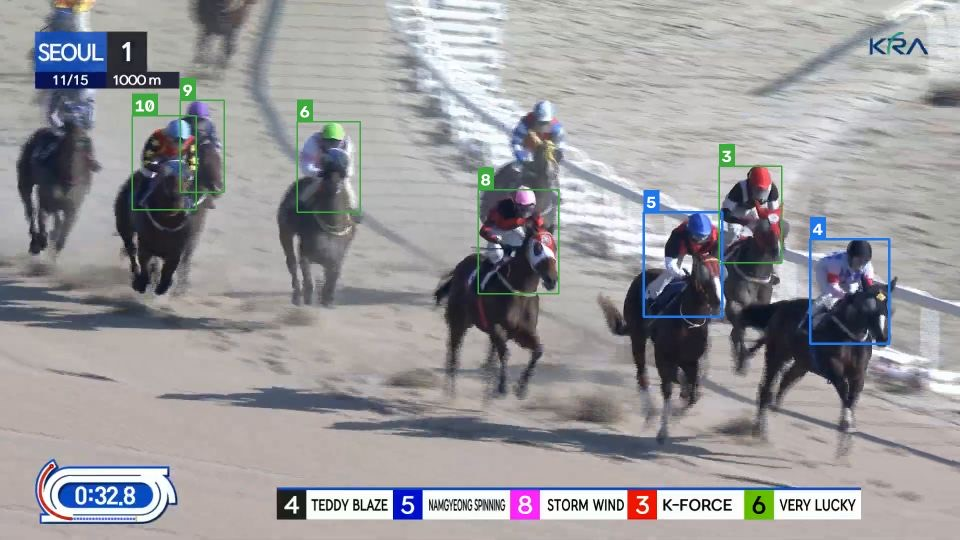
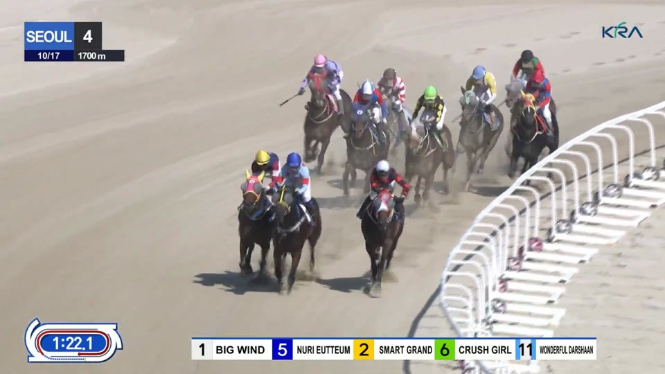
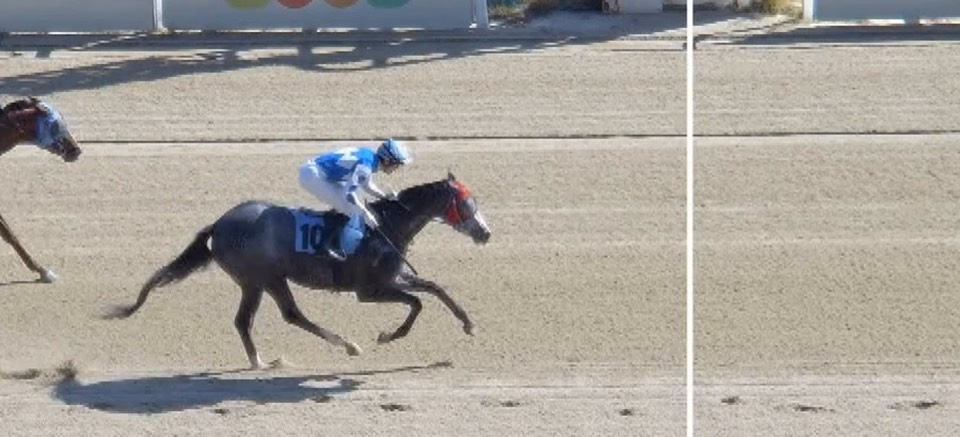

<title>ON-AIR 선두권 식별기</title>
<meta name="claude:viewport-fit-sides" content="cover">
<link rel="stylesheet" href="https://fonts.googleapis.com/css2?family=IBM+Plex+Sans+KR:wght@500;600&family=Noto+Sans+KR:wght@400;500;700&family=IBM+Plex+Mono:wght@400;500&display=swap">
<style>
/* Layout: one reading column (max 860px) like a lab report; figures sit in the column on a white "sheet"; numbers in a mono face. */
:root {
  --bg: #f3f5f2; --surface: #ffffff; --ink: #16201b; --quiet: #5a675f; --line: #d7dcd6; --accent: #0f5a66; --accent-soft: #e2eef0;
  --s1: #2a78d6; --s2: #eb6834; --mute: #b4bcb5; --tint: #eaeeea;
  --cap-1: #ffffff; --cap-2: #f2c200; --cap-3: #d62a2a; --cap-4: #1b1b1b; --cap-5: #1f5fd0; --cap-6: #1c9a3c; --cap-7: #7a4a22; --cap-8: #f08fb5; --cap-9: #7b3fb5; --cap-10: #7cc7ee;
  --display: "IBM Plex Sans KR", "Apple SD Gothic Neo", "Malgun Gothic", sans-serif;
  --body: "Noto Sans KR", "Apple SD Gothic Neo", "Malgun Gothic", sans-serif;
  --mono: "IBM Plex Mono", ui-monospace, "SF Mono", Menlo, monospace;
}
@media (prefers-color-scheme: dark) { :root:not([data-theme="light"]) {
  --bg: #111613; --surface: #1a211d; --ink: #e8ece8; --quiet: #a3aea7; --line: #2e3832; --accent: #74c6d2; --accent-soft: #1c3338;
  --s1: #3987e5; --s2: #d95926; --mute: #55605a; --tint: #232b26; color-scheme: dark } }
:root[data-theme="dark"] {
  --bg: #111613; --surface: #1a211d; --ink: #e8ece8; --quiet: #a3aea7; --line: #2e3832; --accent: #74c6d2; --accent-soft: #1c3338;
  --s1: #3987e5; --s2: #d95926; --mute: #55605a; --tint: #232b26; color-scheme: dark }
* { box-sizing: border-box; }
body { background: var(--bg); color: var(--ink); font: 16px/1.75 var(--body); padding-left: max(16px, env(safe-area-inset-left, 0px)); padding-right: max(16px, env(safe-area-inset-right, 0px)); padding-block: 36px 72px; }
main { max-width: 860px; margin: 0 auto; display: flex; flex-direction: column; gap: 44px; }
header .kicker { font: 500 13px/1.4 var(--mono); color: var(--accent); letter-spacing: .04em; margin: 0 0 10px; }
h1 { font: 600 clamp(28px, 5vw, 40px)/1.25 var(--display); margin: 0 0 14px; text-wrap: balance; }
.thesis { font-size: 18px; margin: 0; max-width: 40em; }
h2 { font: 600 23px/1.35 var(--display); margin: 0 0 6px; text-wrap: balance; }
h3 { font: 600 17px/1.4 var(--display); margin: 22px 0 6px; }
section > p, section > ul, section > ol { max-width: 43em; margin: 10px 0 0; }
section .lead { color: var(--quiet); margin-top: 0; }
ul, ol { padding-left: 22px; } li { margin: 5px 0; }
b, strong { font-weight: 700; }
.num { font-family: var(--mono); font-variant-numeric: tabular-nums; }
.tiles { display: grid; grid-template-columns: repeat(3, minmax(0, 1fr)); gap: 14px; margin-top: 26px; }
@media (max-width: 700px) { .tiles { grid-template-columns: 1fr; } }
.tile { background: var(--surface); border: 1px solid var(--line); border-radius: 6px; padding: 16px 18px; }
.tile .v { font: 500 34px/1.1 var(--mono); letter-spacing: -.02em; }
.tile .k { font-weight: 700; margin-top: 8px; line-height: 1.45; }
.tile .d { color: var(--quiet); font-size: 13.5px; line-height: 1.55; margin-top: 4px; }
figure { margin: 18px 0 0; background: var(--surface); border: 1px solid var(--line); border-radius: 6px; padding: 14px; }
figure img { display: block; width: 100%; height: auto; border-radius: 3px; }
figure .scroll { overflow-x: auto; } figure svg { display: block; width: 100%; height: auto; min-width: 560px; }
figcaption { color: var(--quiet); font-size: 13.5px; line-height: 1.6; margin-top: 10px; }
.tablewrap { overflow-x: auto; margin-top: 14px; }
table { border-collapse: collapse; width: 100%; font-size: 14.5px; line-height: 1.55; }
th, td { text-align: left; padding: 9px 12px; border-bottom: 1px solid var(--line); vertical-align: top; }
th { font-weight: 700; font-size: 13px; color: var(--quiet); white-space: nowrap; }
td.n, th.n { text-align: right; font-family: var(--mono); font-variant-numeric: tabular-nums; white-space: nowrap; }
tr.hl td { background: var(--accent-soft); }
.caps { display: flex; flex-wrap: wrap; gap: 8px; margin-top: 14px; padding: 0; list-style: none; max-width: none; }
.caps li { display: flex; align-items: center; gap: 6px; margin: 0; font: 500 13px/1 var(--mono); border: 1px solid var(--line); border-radius: 999px; padding: 5px 10px 5px 6px; background: var(--surface); }
.caps i { width: 16px; height: 16px; border-radius: 50%; border: 1px solid var(--quiet); display: inline-block; }
.verdict { display: inline-block; font-size: 12.5px; font-weight: 700; padding: 1px 8px; border-radius: 3px; white-space: nowrap; }
.verdict.y { background: var(--accent-soft); color: var(--accent); } .verdict.n { background: var(--tint); color: var(--quiet); }
.note { border-left: 3px solid var(--accent); padding: 4px 0 4px 16px; margin-top: 16px; max-width: 43em; }
code { font: 13.5px var(--mono); background: var(--tint); padding: 1px 5px; border-radius: 3px; }
pre { background: var(--tint); border-radius: 6px; padding: 12px 14px; overflow-x: auto; font: 13.5px/1.6 var(--mono); margin: 12px 0 0; }
footer { color: var(--quiet); font-size: 13.5px; border-top: 1px solid var(--line); padding-top: 18px; }
/* Table of contents: a fixed sidebar at the left edge on wide screens; a folded list under the header on narrow ones. build.py fills both from the h2 headings. */
html { scroll-behavior: smooth; }
@media (prefers-reduced-motion: reduce) { html { scroll-behavior: auto; } }
section, header { scroll-margin-top: 20px; }
.toc { display: none; }
.toc ol, .toc-m ol { list-style: none; padding: 0; margin: 0; counter-reset: toc; }
.toc li, .toc-m li { margin: 0; counter-increment: toc; }
.toc a, .toc-m a { display: flex; gap: 10px; color: var(--ink); text-decoration: none; line-height: 1.45; }
.toc a::before, .toc-m a::before { content: counter(toc, decimal-leading-zero); font: 500 12px/1.75 var(--mono); color: var(--quiet); flex: none; }
.toc-m { background: var(--surface); border: 1px solid var(--line); border-radius: 6px; padding: 12px 18px; }
.toc-m summary { font: 600 15px/1.5 var(--display); cursor: pointer; }
.toc-m ol { margin-top: 8px; }
.toc-m a { padding: 7px 0; font-size: 15px; }
@media (min-width: 1180px) {
  body { padding-left: 296px; }
  .toc-m { display: none; }
  .toc { display: flex; flex-direction: column; gap: 14px; position: fixed; left: 0; top: 0; bottom: 0; width: 272px; overflow-y: auto;
         background: var(--surface); border-right: 1px solid var(--line); padding: 30px 14px 24px 18px; }
  .toc .toc-top { font: 600 16px/1.4 var(--display); color: var(--ink); text-decoration: none; padding: 0 10px; display: block; }
  .toc .toc-top::before { content: none; }
  .toc .toc-kicker { font: 500 12px/1.4 var(--mono); color: var(--accent); letter-spacing: .04em; margin: 0; padding: 0 10px; }
  .toc ol a { padding: 7px 10px; border-radius: 4px; font-size: 14.5px; border-left: 3px solid transparent; }
  .toc ol a:hover { background: var(--tint); }
  .toc ol a.on { background: var(--accent-soft); color: var(--accent); font-weight: 700; border-left-color: var(--accent); }
  .toc ol a.on::before { color: var(--accent); }
  .toc .toc-more { margin: auto 0 0; padding: 14px 10px 0; border-top: 1px solid var(--line); font-size: 13.5px; display: flex; flex-direction: column; gap: 6px; }
  .toc .toc-more a { color: var(--accent); display: block; }
  .toc .toc-more a::before { content: none; }
}
/* Version comparison: radio buttons as tabs, one panel shown, no script. */
.vx { margin-top: 14px; }
.vx > input { position: absolute; opacity: 0; pointer-events: none; }
.vx-tabs { display: flex; flex-wrap: wrap; gap: 6px; }
.vx-tabs label { font: 500 14px/1 var(--mono); padding: 9px 14px; border: 1px solid var(--line); border-radius: 999px; background: var(--surface); cursor: pointer; display: flex; align-items: center; gap: 6px; }
.vx-tabs label small { font: 500 11px/1 var(--body); color: var(--quiet); }
.vx-tabs label:hover { border-color: var(--accent); }
.vx-p { display: none; background: var(--surface); border: 1px solid var(--line); border-radius: 6px; padding: 14px; margin-top: 10px; }
.vx-sum { margin: 0 0 12px; font-size: 15px; line-height: 1.6; max-width: none; }
.vx-code { font: 12px var(--mono); color: var(--quiet); margin-right: 4px; }
.vx-res { display: block; color: var(--quiet); font-size: 13.5px; } .vx-res b { color: var(--ink); font-family: var(--mono); font-weight: 500; }
.vx-flow { display: grid; grid-template-columns: repeat(5, minmax(0, 1fr)); gap: 8px; }
.vx-c { border: 1px solid var(--line); border-radius: 6px; padding: 10px; display: flex; flex-direction: column; gap: 4px; min-height: 148px; }
.vx-c.chg { background: var(--accent-soft); border-color: var(--accent); }
.vx-k { font: 500 11.5px/1.3 var(--mono); color: var(--quiet); display: flex; justify-content: space-between; gap: 4px; }
.vx-k i { font: 700 11px/1.3 var(--body); color: var(--accent); font-style: normal; }
.vx-c b { font-size: 14px; line-height: 1.4; } .vx-d { font-size: 12.5px; line-height: 1.5; color: var(--quiet); }
.vx-c.chg .vx-d { color: var(--ink); }
@media (max-width: 760px) { .vx-flow { grid-template-columns: 1fr; gap: 6px; } .vx-c { min-height: 0; padding: 8px 10px; }
  .vx-c:not(.chg) .vx-d { display: none; } .vx-p[data-v="6"] .vx-c .vx-d { display: block; } .vx-p { padding: 12px; } }
h1, h2, h3 { word-break: keep-all; }
#vx6:checked ~ .vx-p[data-v="6"], #vx7:checked ~ .vx-p[data-v="7"], #vx8:checked ~ .vx-p[data-v="8"], #vx9:checked ~ .vx-p[data-v="9"], #vx10:checked ~ .vx-p[data-v="10"], #vx11:checked ~ .vx-p[data-v="11"] { display: block; }
#vx6:checked ~ .vx-tabs label[for="vx6"], #vx7:checked ~ .vx-tabs label[for="vx7"], #vx8:checked ~ .vx-tabs label[for="vx8"], #vx9:checked ~ .vx-tabs label[for="vx9"], #vx10:checked ~ .vx-tabs label[for="vx10"], #vx11:checked ~ .vx-tabs label[for="vx11"] { background: var(--accent); border-color: var(--accent); color: var(--surface); }
#vx6:checked ~ .vx-tabs label[for="vx6"] small, #vx7:checked ~ .vx-tabs label[for="vx7"] small, #vx8:checked ~ .vx-tabs label[for="vx8"] small, #vx9:checked ~ .vx-tabs label[for="vx9"] small, #vx10:checked ~ .vx-tabs label[for="vx10"] small, #vx11:checked ~ .vx-tabs label[for="vx11"] small { color: var(--surface); }
#vx6:focus-visible ~ .vx-tabs label[for="vx6"], #vx7:focus-visible ~ .vx-tabs label[for="vx7"], #vx8:focus-visible ~ .vx-tabs label[for="vx8"], #vx9:focus-visible ~ .vx-tabs label[for="vx9"], #vx10:focus-visible ~ .vx-tabs label[for="vx10"], #vx11:focus-visible ~ .vx-tabs label[for="vx11"] { outline: 2px solid var(--accent); outline-offset: 2px; }
svg text { font-family: var(--body); }
svg .t { fill: var(--ink); } svg .q { fill: var(--quiet); } svg .b { font-weight: 700; }
svg .m { font-family: var(--mono); }
</style>

<main>
<!-- toc-wide -->
<header id="top">
  <p class="kicker">ON-AIR · 2026-11-19 · 팀 공유</p>
  <h1>중계 화면만 보고 선두권 말 번호 알아내기</h1>
  <p class="thesis">경마 중계 AI가 지어내는 말을 줄이려면, 믿을 수 있는 사실이 먼저 있어야 합니다. 이 작업은 그 사실 가운데 "지금 선두권에 몇 번 말이 있는가"를 화면에서 알아내는 식별기를 만들고, 그것으로 실제 중계를 해 본 기록입니다.</p>
  <div class="tiles">
    <div class="tile"><div class="v">94.3%</div><div class="k">식별기가 말한 번호가 실제 상위 3두였던 비율</div><div class="d">목표 90% 이상. 처음 보는 경마일 6일, 60개 경주</div></div>
    <div class="tile"><div class="v">89.0%</div><div class="k">맞는 번호를 하나 이상 말한 시점의 비율</div><div class="d">목표 80% 이상. 같은 6일, 874개 시점. 날에 따라 82~95%</div></div>
    <div class="tile"><div class="v">138 → 7</div><div class="k">틀린 번호가 들어간 중계 문장</div><div class="d">140개 시점 가운데. 화면만 본 모델 대 식별기를 쓴 중계</div></div>
  </div>
</header>

<!-- toc-narrow -->

<section>
  <h2>왜 이 작업을 했나</h2>
  <p>ON-AIR 프로젝트의 가설은 "어려운 순간에 말 이름을 틀리게 말하는 대신 확정 정보로 메우면 할루시네이션이 줄어드는가"입니다. 이 가설을 시험하려면 두 가지가 필요합니다. 믿을 수 있는 사실, 그리고 그 사실을 믿어도 되는 순간과 안 되는 순간을 가르는 방법입니다.</p>
  <p>경마에서는 기수의 모자색이 말 번호를 알려 줍니다. 그래서 화면에서 모자색을 읽어 "선두권에 있는 번호"를 내는 식별기를 만들었습니다. 처음에는 모든 기수를 알아내려 했지만, 중계에서 가장 중요한 것은 선두권이라는 판단으로 "앞선 세 마리"에 집중했습니다.</p>
  <ul class="caps" aria-label="모자색과 말 번호">
    <li><i style="background:var(--cap-1)"></i>1 흰색</li><li><i style="background:var(--cap-2)"></i>2 노랑</li><li><i style="background:var(--cap-3)"></i>3 빨강</li><li><i style="background:var(--cap-4)"></i>4 검정</li><li><i style="background:var(--cap-5)"></i>5 파랑</li><li><i style="background:var(--cap-6)"></i>6 초록</li><li><i style="background:var(--cap-7)"></i>7 갈색</li><li><i style="background:var(--cap-8)"></i>8 분홍</li><li><i style="background:var(--cap-9)"></i>9 보라</li><li><i style="background:var(--cap-10)"></i>10 하늘색</li><li><i style="background:repeating-linear-gradient(90deg, var(--cap-10) 0 4px, var(--cap-1) 4px 8px)"></i>11 하늘색 줄무늬</li>
  </ul>
</section>

<section>
  <h2>무엇을 만들었나</h2>
  <p class="lead">3초마다 화면 세 장을 보고 선두권 번호를 내는 프로그램입니다. 모두 로컬에서 돌고 유료 API는 쓰지 않았습니다.</p>
  <figure>
    <div class="scroll">
    <svg viewBox="0 0 760 356" role="img" aria-label="화면 세 장에서 선두권 번호까지 다섯 단계를 거치고, 확정된 번호가 있으면 그 번호로 중계하고 없으면 확정 정보로 메운다. 순위 띠는 쓰지 않는다" font-size="13">
      <defs><marker id="ar" viewBox="0 0 10 10" refX="9" refY="5" markerWidth="6" markerHeight="6" orient="auto-start-reverse"><path d="M0 0L10 5L0 10z" fill="currentColor"/></marker></defs>
      <g fill="none" stroke="currentColor" stroke-width="1.25" color="var(--quiet)">
        <path d="M184 76H208" marker-end="url(#ar)"/><path d="M368 76H392" marker-end="url(#ar)"/><path d="M552 76H576" marker-end="url(#ar)"/>
        <path d="M656 104V148" marker-end="url(#ar)"/><path d="M576 176H552" marker-end="url(#ar)"/><path d="M392 176H368" marker-end="url(#ar)"/><path d="M208 176H180" marker-end="url(#ar)"/>
        <path d="M104 212V256" marker-end="url(#ar)"/><path d="M104 234H288V256" marker-end="url(#ar)"/>
        <rect x="24" y="48" width="160" height="56" rx="6"/><rect x="208" y="48" width="160" height="56" rx="6"/><rect x="392" y="48" width="160" height="56" rx="6"/><rect x="576" y="48" width="160" height="56" rx="6"/>
        <rect x="576" y="148" width="160" height="56" rx="6"/><rect x="392" y="148" width="160" height="56" rx="6"/>
        <polygon points="28,176 104,140 180,176 104,212"/>
        <rect x="24" y="256" width="160" height="56" rx="6"/>
      </g>
      <rect x="208" y="148" width="160" height="56" rx="6" fill="var(--accent-soft)" stroke="var(--accent)" stroke-width="2"/>
      <rect x="208" y="256" width="160" height="56" rx="6" fill="var(--tint)" stroke="var(--quiet)" stroke-width="1.25"/>
      <g text-anchor="middle">
        <text class="t b" x="104" y="72">화면 세 장</text><text class="q" x="104" y="90" font-size="11.5">지금, 0.5초 전, 1.0초 전</text>
        <text class="t b" x="288" y="72">1 기수 찾기</text><text class="q" x="288" y="90" font-size="11.5">말 위의 사람 검출</text>
        <text class="t b" x="472" y="72">2 번호 읽기</text><text class="q" x="472" y="90" font-size="11.5">모자 분류기 (v8: +Qwen)</text>
        <text class="t b" x="656" y="72">3 앞선 말 고르기</text><text class="q" x="656" y="90" font-size="11.5">띠로 학습한 모델</text>
        <text class="t b" x="656" y="172">4 말하기</text><text class="q" x="656" y="190" font-size="11.5">세 장 중 두 장 이상</text>
        <text class="t b" x="472" y="172">5 이어받기</text><text class="q" x="472" y="190" font-size="11.5">3초·6초 전 번호</text>
        <text class="t b" x="288" y="172">선두권 번호</text><text class="q" x="288" y="190" font-size="11.5">번호별 확률 포함</text>
        <text class="t" x="104" y="172" font-size="12">확정된 번호가</text><text class="t" x="104" y="188" font-size="12">있나</text>
        <text class="t b" x="104" y="280">번호를 중계에 사용</text><text class="q" x="104" y="298" font-size="11.5">선두권, 선두, 앞뒤 순서</text>
        <text class="t b" x="288" y="280">확정 정보로 메움</text><text class="q" x="288" y="298" font-size="11.5">경주 정보, 경과 시간</text>
      </g>
      <text class="q" x="96" y="250" text-anchor="end" font-size="11.5">있음</text><text class="q" x="196" y="228" text-anchor="middle" font-size="11.5">없음</text>
    </svg>
    </div>
    <figcaption>식별기의 흐름(v9와 v8 공통). v9는 2단계에서 모자 분류기만 쓰고, v8은 Qwen에게도 모자색을 묻습니다. 윗줄은 화면 한 장마다 하는 일이고, 아랫줄은 여러 장을 묶어 말할 번호를 정하는 단계입니다. <b>순위 띠는 이 흐름에 없습니다.</b> 띠는 3단계 모델을 학습할 때의 정답과 채점에만 썼고, 식별기에는 띠를 가린 화면을 줍니다.</figcaption>
  </figure>
  <ol>
    <li><b>기수 찾기.</b> 검출 모델(Faster R-CNN, 추가 학습 없음)로 말 위의 사람을 찾습니다. 한 화면에서 4명 미만이면 그 화면만 작은 기수용 설정으로 다시 찾습니다.</li>
    <li><b>번호 읽기.</b> 같은 모자 그림을 둘이 따로 읽습니다. 로컬 Qwen 9B는 모자색을 답하고, 모자 사진 598장으로 학습한 분류기(ResNet-18)는 1~11번에 확률을 줍니다. 분류기 확률에 Qwen이 답한 번호의 가산점을 더한 뒤, 한 화면에서 같은 번호가 두 번 나오지 않게 배정합니다. 배정된 번호의 분류기 확률이 0.7 이상이면 "확정"입니다. v9는 Qwen 없이 분류기만 씁니다.</li>
    <li><b>앞선 말 고르기.</b> 확정된 기수마다 상자의 위치와 크기를 보고 "상위 3두일 확률"을 냅니다. 이 모델은 방송의 순위 띠를 정답으로 삼아 학습했습니다.</li>
    <li><b>말하기.</b> 최근 세 장 가운데 두 장 이상에서 고른 번호를 말합니다.</li>
    <li><b>이어받기.</b> 지금 화면에서 못 읽었을 때, 3초 전과 6초 전에 둘 다 말한 번호를 한 번 더 말합니다. 멀리서 찍은 순간을 메우는 규칙입니다. 이어받은 번호를 다시 이어받지는 않아서, 가장 오래된 정보가 3초 전 것입니다. 안 쓴 경마일 2일에서 이어받은 번호 58개 중 57개가 실제 상위 3두였습니다(지금 화면에서 읽은 번호는 371개 중 349개).</li>
  </ol>
  <figure>
    
    <figcaption>식별기 결과를 화면에 그린 것(2026-11-15 서울 1경주). 파란 상자가 "앞선 말"로 고른 기수, 초록 상자가 번호만 확정한 기수입니다. 아래 순위 띠에도 4번과 5번이 1, 2위로 나와 있습니다. 식별기에는 띠를 가린 화면을 줍니다.</figcaption>
  </figure>
</section>

<section>
  <h2>어떻게 쟀나</h2>
  <p class="lead">정답은 방송 화면 아래의 순위 띠에서 가져왔습니다. 사람이 라벨을 적지 않아도 경주 영상만 있으면 채점할 수 있습니다.</p>
  <figure>
    
    <figcaption>아래 가운데가 순위 띠(앞선 다섯 마리의 번호와 이름), 왼쪽 아래가 경주 타이머입니다(2026-10-17 서울 4경주). 띠는 Qwen이 자동으로 읽습니다. 사람이 확인한 38장 가운데 37장이 일치했고 틀리게 읽은 것은 없었습니다.</figcaption>
  </figure>
  <ul>
    <li><b>먼저 고정한다.</b> 시험할 영상을 받기 전에 방법, 채점 코드, 판정 기준을 파일로 쓰고 해시를 남겼습니다.</li>
    <li><b>한 번도 보지 않은 경마일로 확인한다.</b> 날짜는 내용을 보기 전에 규칙으로 정했습니다. 한국마사회 국제 채널의 서울 경주 아홉 경마일 치를 썼습니다.</li>
    <li><b>이미 본 데이터에서 찾은 것은 결론으로 쓰지 않는다.</b> 다음 경마일에서 다시 확인된 것만 결론으로 썼습니다.</li>
  </ul>
  <div class="tablewrap"><table>
    <thead><tr><th>지표</th><th>뜻</th><th>목표</th></tr></thead>
    <tbody>
      <tr><td><b>A</b></td><td>식별기가 "N번이 선두권에 있다"고 말한 것 중 실제 상위 3두인 비율</td><td>90% 이상</td></tr>
      <tr><td><b>B</b></td><td>맞는 번호를 하나 이상 말한 시점의 비율</td><td>80% 이상</td></tr>
      <tr><td><b>C</b></td><td>식별기 번호를 중계 모델에 줬을 때와 화면만 보여 줬을 때, 틀린 말이 몇 개 나오는지 비교</td><td>기준 없이 비교. 결과: 화면만 267개 → 번호를 주면 27개 (138장, v6)</td></tr>
    </tbody>
  </table></div>
  <p>A는 "말한 것이 얼마나 맞는가", B는 "얼마나 자주 말할 수 있는가"입니다. 조심스럽게 말하면 A는 오르고 B는 내려서, 둘을 함께 봐야 합니다. C는 식별기가 중계의 틀린 말을 실제로 줄이는지 보는 비교입니다. 처음 보는 날의 띠 구간 138장에서 틀린 말이 267개에서 27개로 줄었습니다(v6 때 잰 값, 번호 목록으로 받아서 셈).</p>
</section>

<section>
  <h2>식별기 결과</h2>
  <p class="lead">처음으로 선두권 번호를 낸 v6은 시험에서 A 86.2%, B 75.1%였습니다. 두 번 바꾼 v8에서 A 92.9%, B 94.6%가 됐고, 언어 모델을 뺀 v9는 A 94.5%, B 94.1%였습니다. 모자 분류기를 다시 학습한 v11(지금의 기본값)은 A 95.5%, B 94.8%입니다. 시험은 늘 <b>그 버전을 만들 때 한 번도 쓰지 않은 경마일</b>의 경주로 했습니다. 경마일은 경마가 열린 하루이고, 서울은 하루에 10~11개 경주가 있습니다. 예를 들어 "안 쓴 경마일 2일"은 처음 보는 2일 치 경주 20개 전부로 시험했다는 뜻입니다.</p>
  <figure>
    <div class="scroll">
    <svg viewBox="0 0 760 362" role="img" aria-label="버전별 A와 B. v6 A 86.2% B 75.1%, v7 A 92.7% B 86.3%, v8 A 92.9% B 94.6%, v9 A 94.5% B 94.1%, v11 A 95.5% B 94.8%" font-size="12">
      <g><circle cx="116" cy="26" r="5" fill="var(--s1)"/><text class="t" x="128" y="30">A: 말한 것 중 맞는 비율</text><circle cx="376" cy="26" r="5" fill="var(--s2)"/><text class="t" x="388" y="30">B: 맞는 말이 있는 시점</text></g>
      <g stroke="var(--line)"><line x1="110" x2="660" y1="90" y2="90"/><line x1="110" x2="660" y1="142.5" y2="142.5"/><line x1="110" x2="660" y1="195" y2="195"/><line x1="110" x2="660" y1="247.5" y2="247.5"/><line x1="110" x2="660" y1="300" y2="300"/></g>
      <g class="q m" text-anchor="end" font-size="11.5"><text class="q" x="100" y="94">100%</text><text class="q" x="100" y="146.5">90%</text><text class="q" x="100" y="199">80%</text><text class="q" x="100" y="251.5">70%</text><text class="q" x="100" y="304">60%</text></g>
      <g stroke="var(--quiet)" stroke-width="1.25" stroke-dasharray="5 4"><line x1="110" x2="660" y1="142.5" y2="142.5"/><line x1="110" x2="660" y1="195" y2="195"/></g>
      <text class="q" x="668" y="146.5" font-size="11.5">A 목표 90%</text><text class="q" x="668" y="199" font-size="11.5">B 목표 80%</text>
      <polyline points="150,162.5 272,128.3 394,127.3 511,118.9 633,113.6" fill="none" stroke="var(--s1)" stroke-width="2"/>
      <polyline points="150,220.7 272,161.9 394,118.3 521,121 643,117.3" fill="none" stroke="var(--s2)" stroke-width="2"/>
      <g stroke="var(--surface)" stroke-width="2">
        <circle cx="150" cy="162.5" r="6" fill="var(--s1)"><title>v6, A 86.2%</title></circle><circle cx="272" cy="128.3" r="6" fill="var(--s1)"><title>v7, A 92.7%</title></circle><circle cx="394" cy="127.3" r="6" fill="var(--s1)"><title>v8, A 92.9%</title></circle><circle cx="511" cy="118.9" r="6" fill="var(--s1)"><title>v9, A 94.5%</title></circle><circle cx="633" cy="113.6" r="6" fill="var(--s1)"><title>v11, A 95.5%</title></circle>
        <circle cx="150" cy="220.7" r="6" fill="var(--s2)"><title>v6, B 75.1%</title></circle><circle cx="272" cy="161.9" r="6" fill="var(--s2)"><title>v7, B 86.3%</title></circle><circle cx="394" cy="118.3" r="6" fill="var(--s2)"><title>v8, B 94.6%</title></circle><circle cx="521" cy="121" r="6" fill="var(--s2)"><title>v9, B 94.1%</title></circle><circle cx="643" cy="117.3" r="6" fill="var(--s2)"><title>v11, B 94.8%</title></circle>
      </g>
      <g class="m b" text-anchor="middle" font-size="12.5">
        <text class="t" x="150" y="186">A 86.2%</text><text class="t" x="150" y="244">B 75.1%</text>
        <text class="t" x="272" y="115">A 92.7%</text><text class="t" x="272" y="185">B 86.3%</text>
        <text class="t" x="394" y="104">B 94.6%</text><text class="t" x="394" y="158">A 92.9%</text>
        <text class="t" x="511" y="104">A 94.5%</text><text class="t" x="516" y="158">B 94.1%</text>
        <text class="t" x="633" y="101">A 95.5%</text><text class="t" x="655" y="122" text-anchor="start">B 94.8%</text>
      </g>
      <g text-anchor="middle"><text class="t" x="150" y="326" font-size="12.5">v6</text><text class="q" x="150" y="344" font-size="11.5">안 쓴 경마일 5일</text><text class="t" x="272" y="326" font-size="12.5">v7</text><text class="q" x="272" y="344" font-size="11.5">안 쓴 경마일 3일</text><text class="t" x="394" y="326" font-size="12.5">v8</text><text class="q" x="394" y="344" font-size="11.5">안 쓴 경마일 2일</text><text class="t" x="516" y="326" font-size="12.5">v9</text><text class="q" x="516" y="344" font-size="11.5">안 쓴 다른 2일</text><text class="t" x="638" y="326" font-size="12.5">v11 (기본값)</text><text class="q" x="638" y="344" font-size="11.5">라벨을 안 뽑은 3일</text></g>
    </svg>
    </div>
    <figcaption>각 버전을 고르는 데 쓰지 않은 경마일의 합계입니다. 순위 띠가 화면에 있는 구간에서 잰 값입니다. 버전마다 잰 날이 달라서 점끼리 바로 비교할 수는 없습니다. v9를 잰 2일(8/29, 8/23)에서 v8은 A 96.4%, B 90.1%였습니다. v11의 점은 벤치마크 시험용 날 가운데 새 모자 분류기의 라벨을 뽑지 않은 3일(9월 12일, 5일, 8월 30일, 443개 시점)의 값이고, 같은 3일에서 v9는 A 93.8%, B 91.2%였습니다. 이 3일은 새 분류기를 새 날로 보낼지 정할 때 공식 기록 기준으로 한 번 본 날입니다.</figcaption>
  </figure>
  <div class="tablewrap"><table>
    <thead><tr><th>버전</th><th>코드 이름</th><th>무엇을 바꿨나</th><th class="n">A</th><th class="n">B</th><th>어디서 쟀나</th></tr></thead>
    <tbody>
      <tr><td>v6</td><td>S0</td><td>처음으로 "선두권 번호"를 냄. Qwen이 말한 번호도 "확정"으로 인정. 앞선 말 = 화면 아래쪽 두 상자</td><td class="n">86.2%</td><td class="n">75.1%</td><td>안 쓴 경마일 5일, 732개 시점</td></tr>
      <tr><td>v7</td><td>T1</td><td>"확정"은 분류기 확률 0.7 이상만. 작은 기수 검출과 이어받기 추가</td><td class="n">92.7%</td><td class="n">86.3%</td><td>안 쓴 경마일 3일, 438개 시점</td></tr>
      <tr class="hl"><td><b>v8</b></td><td>L1</td><td>앞선 말 고르기를 순위 띠로 학습한 모델로 바꿈. 11월 18일까지의 기본값</td><td class="n">92.9%</td><td class="n">94.6%</td><td>안 쓴 경마일 2일(10월 5일, 3일), 295개 시점. 6일로 늘리면 94.3% / 89.0%</td></tr>
      <tr class="hl"><td><b>v9</b></td><td>F2</td><td>언어 모델(Qwen)을 뺌 + 빈 시점 메우기 + 선두 기준값 0.5. 시점당 8초 → 2초. 11월 19일까지의 기본값(<code>--v9</code>)</td><td class="n">94.5%</td><td class="n">94.1%</td><td>안 쓴 다른 경마일 2일(8월 29일, 23일), 20개 경주, 253개 시점. 시험 방법은 미리 고정. 6일 874개 시점에서는 93.2% / 93.0% (그중 4일은 조각을 고를 때 본 날)</td></tr>
      <tr><td>v10</td><td>F2+finish</td><td>v9 + 결승 36초 전부터 공식 기록으로 배운 선두 모델 + 우승마 부르기. 프로그램의 선택 사항(<code>--v10</code>). 우승마 부르기는 새 날에서 기준 미달</td><td class="n">—</td><td class="n">—</td><td>띠 없이 경주 전체로 따로 쟀습니다: <a href="#finish3">아래</a></td></tr>
      <tr class="hl"><td><b>v11</b></td><td>F2+caps2</td><td>v9의 흐름 + 다시 학습한 모자 분류기(사람 손 없이 모은 라벨 545장). <b>프로그램의 기본값</b></td><td class="n">95.5%</td><td class="n">94.8%</td><td>벤치마크 시험용 날 중 라벨을 뽑지 않은 3일, 443개 시점(v9는 같은 3일에서 93.8% / 91.2%). 띠 없는 구간까지는 <a href="#caps2">아래</a></td></tr>
    </tbody>
  </table></div>
  <p>v5 이전은 기수 한 명 한 명의 번호를 내던 단계이고(v4는 이 작업 이전의 식별기), 코드 이름은 파일과 예전 기록에 남아 있는 이름입니다. v8을 고르는 데 쓰지 않은 세 번째 경마일(11월 15일, 중계 시연에 쓴 날)에서도 A 97.0%, B 87.9%였습니다. 그 뒤 새 경마일 4일에서 다시 쟀고, 거기서는 A 95.1%, B 86.2%였습니다(<a href="#night">아래</a>).</p>

  <h3>통한 것과 통하지 않은 것</h3>
  <p>숫자를 올린 변경은 다섯 가지였고, 그중 네 가지는 사람 라벨이 필요 없습니다. 이미 본 경마일에서 좋아 보였던 변경이 새 경마일에서 무너진 일이 다섯 번 있었습니다.</p>
  <div class="tablewrap"><table>
    <thead><tr><th>시도</th><th>새 경마일에서</th><th>메모</th></tr></thead>
    <tbody>
      <tr><td>모자 사진으로 분류기 학습 (사람 라벨 417명)</td><td><span class="verdict y">통함</span></td><td>Qwen이 거의 못 읽던 갈색을 읽게 됨</td></tr>
      <tr><td>확정 조건에서 Qwen 빼기 + 이어받기</td><td><span class="verdict y">통함</span></td><td>A 86% → 92%. Qwen이 하늘색을 파랑으로 읽는 실수를 막음</td></tr>
      <tr><td>앞선 말 고르기를 순위 띠로 학습</td><td><span class="verdict y">통함</span></td><td>B가 크게 오름. 옆에서 찍은 화면에서 손 규칙이 틀리던 것을 고침</td></tr>
      <tr><td>기수 번호를 읽을 때 Qwen 빼기 (분류기만)</td><td><span class="verdict y">통함</span></td><td>정확도는 그대로, 시점당 8.3초 → 2.3초</td></tr>
      <tr><td>아무 말도 못 한 시점에 번호 하나 더하기</td><td><span class="verdict y">통함</span></td><td>B 86% → 91%, A는 0.5%p 내려감</td></tr>
      <tr><td>확대 검출, 방향으로 순서 매기기, 더 큰 모델, 경주복으로 알아보기</td><td><span class="verdict n">안 통함</span></td><td>개발용 경주에서만 좋았거나 구분력이 약함</td></tr>
      <tr><td>사람 라벨을 하루치 더 넣기, 띠로 모자 분류기 학습</td><td><span class="verdict n">안 통함</span></td><td>차이가 없거나 뚜렷하지 않음</td></tr>
      <tr><td>띠로 배우는 날을 4일에서 6일로 늘리기</td><td><span class="verdict n">안 통함</span></td><td>차이 없음. 4일 치로 이미 배울 만큼 배움</td></tr>
      <tr><td>결승선 구간: 가로 순서 규칙, 해상도를 낮춘 학습</td><td><span class="verdict n">안 통함</span></td><td>이미 본 날에서만 좋았음</td></tr>
    </tbody>
  </table></div>
</section>

<section id="versions">
  <h2>버전마다 무엇을 학습했고 무엇이 다른가</h2>
  <p class="lead">버전을 누르면 다섯 단계가 각각 무엇을 쓰고 무엇으로 학습했는지 바뀝니다. 색이 칠해진 칸이 바로 앞 버전에서 바뀐 곳입니다.</p>
  <div class="vx">
    <input type="radio" name="vx" id="vx6"><input type="radio" name="vx" id="vx7"><input type="radio" name="vx" id="vx8"><input type="radio" name="vx" id="vx9"><input type="radio" name="vx" id="vx10"><input type="radio" name="vx" id="vx11" checked>
    <div class="vx-tabs"><label for="vx6">v6</label><label for="vx7">v7</label><label for="vx8">v8</label><label for="vx9">v9</label><label for="vx10">v10</label><label for="vx11">v11<small>기본값</small></label></div>
    <div class="vx-p" data-v="6"><p class="vx-sum"><b>v6</b> <span class="vx-code">S0</span> 처음으로 선두권 번호를 낸 버전<span class="vx-res"><b>A 86.2% · B 75.1%</b> — 안 쓴 경마일 5일</span></p><div class="vx-flow"><div class="vx-c"><span class="vx-k">1 기수 찾기</span><b>공개 검출 모델</b><span class="vx-d">Faster R-CNN. 추가 학습 없음</span></div><div class="vx-c"><span class="vx-k">2 번호 읽기</span><b>Qwen 9B + 모자 분류기</b><span class="vx-d">분류기는 직접 붙인 모자 라벨 598장(2일 치)으로 학습. Qwen이 말한 번호도 확정으로 인정</span></div><div class="vx-c"><span class="vx-k">3 앞선 말 고르기</span><b>손 규칙: 화면 아래쪽 두 상자</b><span class="vx-d">학습 없음</span></div><div class="vx-c"><span class="vx-k">4 말하는 규칙</span><b>그림 3장 중 2장 이상</b><span class="vx-d">규칙. 학습 없음</span></div><div class="vx-c"><span class="vx-k">5 선두와 순서</span><b>없음</b><span class="vx-d">선두권 번호까지만 냄</span></div></div></div><div class="vx-p" data-v="7"><p class="vx-sum"><b>v7</b> <span class="vx-code">T1</span> 확정 기준을 좁히고, 못 읽는 순간을 메움<span class="vx-res"><b>A 92.7% · B 86.3%</b> — 안 쓴 경마일 3일</span></p><div class="vx-flow"><div class="vx-c chg"><span class="vx-k">1 기수 찾기<i>바뀜</i></span><b>공개 검출 모델 + 작은 기수 다시 찾기</b><span class="vx-d">4명 미만이면 작은 기수용 설정으로 한 번 더. 추가 학습 없음</span></div><div class="vx-c chg"><span class="vx-k">2 번호 읽기<i>바뀜</i></span><b>Qwen 9B + 모자 분류기</b><span class="vx-d">같은 분류기(598장). 확정은 분류기 확률 0.7 이상일 때만</span></div><div class="vx-c"><span class="vx-k">3 앞선 말 고르기</span><b>손 규칙: 화면 아래쪽 두 상자</b><span class="vx-d">학습 없음</span></div><div class="vx-c chg"><span class="vx-k">4 말하는 규칙<i>바뀜</i></span><b>3장 중 2장 + 이어받기</b><span class="vx-d">3초 전과 6초 전에 둘 다 말한 번호를 한 번 더 말함</span></div><div class="vx-c"><span class="vx-k">5 선두와 순서</span><b>없음</b><span class="vx-d">선두권 번호까지만 냄</span></div></div></div><div class="vx-p" data-v="8"><p class="vx-sum"><b>v8</b> <span class="vx-code">L1</span> 앞선 말 고르기를 학습으로 바꾸고, 선두를 말하기 시작<span class="vx-res"><b>A 92.9% · B 94.6%</b> — 안 쓴 경마일 2일</span></p><div class="vx-flow"><div class="vx-c"><span class="vx-k">1 기수 찾기</span><b>공개 검출 모델 + 작은 기수 다시 찾기</b><span class="vx-d">4명 미만이면 작은 기수용 설정으로 한 번 더. 추가 학습 없음</span></div><div class="vx-c"><span class="vx-k">2 번호 읽기</span><b>Qwen 9B + 모자 분류기</b><span class="vx-d">같은 분류기(598장). 확정은 0.7 이상</span></div><div class="vx-c chg"><span class="vx-k">3 앞선 말 고르기<i>바뀜</i></span><b>학습한 모델</b><span class="vx-d">순위 띠의 상위 3두를 정답으로, 4일 치 화면의 기수 상자 위치·크기로 학습</span></div><div class="vx-c"><span class="vx-k">4 말하는 규칙</span><b>3장 중 2장 + 이어받기</b><span class="vx-d">v7과 같음</span></div><div class="vx-c chg"><span class="vx-k">5 선두와 순서<i>바뀜</i></span><b>선두 모델 + 앞뒤 순서</b><span class="vx-d">띠의 1위를 정답으로 같은 4일로 학습. 기준값 0.6</span></div></div></div><div class="vx-p" data-v="9"><p class="vx-sum"><b>v9</b> <span class="vx-code">F2</span> 언어 모델을 빼서 4배쯤 빨라짐 (시점당 8초 → 2초)<span class="vx-res"><b>A 94.5% · B 94.1%</b> — 안 쓴 다른 경마일 2일</span></p><div class="vx-flow"><div class="vx-c"><span class="vx-k">1 기수 찾기</span><b>공개 검출 모델 + 작은 기수 다시 찾기</b><span class="vx-d">4명 미만이면 작은 기수용 설정으로 한 번 더. 추가 학습 없음</span></div><div class="vx-c chg"><span class="vx-k">2 번호 읽기<i>바뀜</i></span><b>모자 분류기만</b><span class="vx-d">Qwen을 뺌. 분류기는 그대로(598장)</span></div><div class="vx-c chg"><span class="vx-k">3 앞선 말 고르기<i>바뀜</i></span><b>학습한 모델 (다시 학습)</b><span class="vx-d">Qwen 관련 입력을 빼고 같은 4일로 다시 학습. 확정 기수 10,530명</span></div><div class="vx-c chg"><span class="vx-k">4 말하는 규칙<i>바뀜</i></span><b>+ 빈 시점 메우기</b><span class="vx-d">아무 번호도 못 말한 시점에 가장 확실한 번호 하나를 더함</span></div><div class="vx-c chg"><span class="vx-k">5 선두와 순서<i>바뀜</i></span><b>선두 모델 (다시 학습)</b><span class="vx-d">같은 4일. 기준값 0.6 → 0.5</span></div></div></div><div class="vx-p" data-v="10"><p class="vx-sum"><b>v10</b> <span class="vx-code">F2+finish</span> v9에 결승 구간용 조각을 더함. 선택 사항 <code>--v10</code><span class="vx-res"><b>결승 구간 선두 93.6% (v9 86.2%)</b> — 안 쓴 경마일 2일, 띠 없이. 우승마 부르기는 기준 미달</span></p><div class="vx-flow"><div class="vx-c"><span class="vx-k">1 기수 찾기</span><b>공개 검출 모델 + 작은 기수 다시 찾기</b><span class="vx-d">4명 미만이면 작은 기수용 설정으로 한 번 더. 추가 학습 없음</span></div><div class="vx-c"><span class="vx-k">2 번호 읽기</span><b>모자 분류기만</b><span class="vx-d">v9와 같음</span></div><div class="vx-c"><span class="vx-k">3 앞선 말 고르기</span><b>학습한 모델</b><span class="vx-d">v9와 같음</span></div><div class="vx-c"><span class="vx-k">4 말하는 규칙</span><b>v9와 같음</b><span class="vx-d">3장 중 2장, 이어받기, 빈 시점 메우기</span></div><div class="vx-c chg"><span class="vx-k">5 선두와 순서<i>바뀜</i></span><b>결승 36초 전부터 다른 선두 모델 + 우승마 부르기</b><span class="vx-d">공식 통과 기록을 정답으로, 6일 치 마지막 37초 화면으로 학습. 띠가 없는 구간을 처음 배움</span></div></div></div><div class="vx-p" data-v="11"><p class="vx-sum"><b>v11</b> <span class="vx-code">F2+caps2</span> 모자 분류기를 다시 학습. 지금의 기본값<span class="vx-res"><b>A 95.5% · B 94.8% (v9는 93.8% · 91.2%)</b> — 라벨을 안 뽑은 3일. 틀린 문장 10.8% → 8.1%</span></p><div class="vx-flow"><div class="vx-c"><span class="vx-k">1 기수 찾기</span><b>공개 검출 모델 + 작은 기수 다시 찾기</b><span class="vx-d">4명 미만이면 작은 기수용 설정으로 한 번 더. 추가 학습 없음</span></div><div class="vx-c chg"><span class="vx-k">2 번호 읽기<i>바뀜</i></span><b>다시 학습한 모자 분류기</b><span class="vx-d">직접 붙인 598장 + 사람 손 없이 모은 545장. 공식 기록과 띠의 순서로, 분류기가 못 읽던 기수에 번호를 붙임</span></div><div class="vx-c"><span class="vx-k">3 앞선 말 고르기</span><b>학습한 모델</b><span class="vx-d">v9와 같음. 예전 분류기의 확률로 학습한 그대로</span></div><div class="vx-c"><span class="vx-k">4 말하는 규칙</span><b>v9와 같음</b><span class="vx-d">3장 중 2장, 이어받기, 빈 시점 메우기</span></div><div class="vx-c"><span class="vx-k">5 선두와 순서</span><b>선두 모델</b><span class="vx-d">v9와 같음. 결승 구간 조각은 <code>--v10</code>로 더할 수 있음</span></div></div></div>
  </div>
  <p class="note">학습에 쓴 정답은 세 가지입니다. 사람이 붙인 모자 라벨, 방송의 순위 띠, 한국마사회의 공식 통과 기록. 식별기는 실행할 때 이 가운데 어느 것도 읽지 않고 화면만 봅니다.</p>
</section>

<section>
  <h2>선두권 안의 순서</h2>
  <p class="lead">식별기는 "선두권에 6번과 9번이 있다"까지만 말했습니다. 누가 앞인지도 말할 수 있도록, 순위 띠의 첫 번호를 정답 삼아 "이 기수가 선두인가"를 같은 방식으로 배우게 했습니다. 사람 라벨은 쓰지 않았습니다.</p>
  <div class="tablewrap"><table>
    <thead><tr><th>문장</th><th>배운 규칙</th><th>손 규칙 (더 아래에 있는 상자가 앞)</th><th>얼마나 자주 말하나</th></tr></thead>
    <tbody>
      <tr><td><b>"선두는 N번"</b></td><td class="n"><b>94.0%</b> (149번 중 140번)</td><td class="n">79.5% (215번 중 171번)</td><td>시점의 절반 (295개 중 149개)</td></tr>
      <tr><td><b>"a번이 b번보다 앞"</b></td><td class="n"><b>93.0%</b> (187번 중 174번)</td><td class="n">74.7% (257번 중 192번)</td><td>함께 말한 두 번호의 짝 중 73%</td></tr>
    </tbody>
  </table></div>
  <ul>
    <li><b>틀린 선두 문장이 44개에서 9개로 줄었습니다.</b> 틀린 9개는 띠의 2위(8개)와 3위(1개)였습니다. 선두권 밖의 말을 선두라고 한 적은 없습니다.</li>
    <li><b>덜 말하고 더 맞히는 규칙입니다.</b> 점수가 낮으면 선두를 말하지 않습니다. 그래서 맞게 말한 시점은 손 규칙보다 적습니다(171개 → 140개). 말하지 않는 시점에는 지금처럼 "선두권에 N번, M번"까지만 말합니다.</li>
    <li><b>경주마다 차이가 큽니다.</b> 선두를 한 번밖에 말하지 않은 경주가 있고, 틀린 것은 두 경주에 몰려 있습니다.</li>
    <li><b>새 날 4일에서는 선두가 87.7%로 내려갔습니다.</b> 위의 94.0%는 좋은 쪽으로 치우친 값이었습니다. 앞뒤는 91.4%로 다시 나왔습니다(<a href="#night">아래</a>). 순서를 넣은 중계도 해 봤습니다.</li>
  </ul>
  <p class="note">처음 보는 두 경마일(10월 5일, 10월 3일)의 20개 경주, 295개 시점에서 쟀습니다. 규칙과 판정 기준은 결과를 보기 전에 고정했습니다. 순위 띠가 화면에 있는 구간만입니다.</p>
</section>

<section id="night">
  <h2>새 경마일 4일에서 다시 재기</h2>
  <p class="lead">위의 숫자는 경마일 2일의 것이고, 그 2일은 쉬운 날이었습니다. 그래서 한 번도 쓰지 않은 4일(9월 19일, 12일, 5일, 8월 30일, 40개 경주, 579개 시점)에서 다시 쟀습니다. 날짜, 규칙, 판정 기준은 결과를 보기 전에 고정했습니다.</p>
  <div class="tablewrap"><table>
    <thead><tr><th>무엇</th><th class="n">새 경마일 4일</th><th class="n">10월 5일·3일</th><th>미리 정한 판정</th></tr></thead>
    <tbody>
      <tr><td><b>A</b> 말한 번호가 상위 3두</td><td class="n"><b>95.1%</b> (939개 중 893개)</td><td class="n">92.9%</td><td><span class="verdict y">충족</span> 4일 모두 90% 이상</td></tr>
      <tr><td><b>B</b> 맞는 번호가 있는 시점</td><td class="n"><b>86.2%</b> (579개 중 499개)</td><td class="n">94.6%</td><td><span class="verdict y">충족</span> 4일 모두 80% 이상 (82.5~89.8%)</td></tr>
      <tr><td>"선두는 N번" (기준값 0.6)</td><td class="n">87.7% (284번 중 249번)</td><td class="n">94.0%</td><td><span class="verdict n">미충족</span> 하루(9월 5일)가 79.0%</td></tr>
      <tr><td>"선두는 N번" (기준값 0.5)</td><td class="n"><b>87.5%</b> (344번 중 301번)</td><td class="n">90.3%</td><td><span class="verdict y">충족</span> 더 자주 말하고 정확도는 같음</td></tr>
      <tr><td>"a번이 b번보다 앞"</td><td class="n"><b>91.4%</b> (336번 중 307번)</td><td class="n">93.0%</td><td><span class="verdict y">충족</span></td></tr>
    </tbody>
  </table></div>
  <ul>
    <li><b>v8은 새 날에서도 목표를 채웠습니다.</b> 다만 B는 8%p 낮습니다. 6일을 합친 A 94.3%, B 89.0%가 더 믿을 만한 값입니다.</li>
    <li><b>선두는 "88%쯤"으로 적어야 합니다.</b> 틀린 선두 문장은 거의 다 띠의 2위 말이었습니다(기준값 0.5에서 틀린 43개 중 38개). 선두 기준값은 0.5를 권합니다.</li>
    <li><b>이 4일에서는 학습한 "앞선 말 고르기"가 손 규칙보다 낫다고 할 수 없었습니다.</b> 손 규칙(v7)이 A 95.4%, B 85.5%였고, 차이는 오차 범위 안입니다.</li>
  </ul>

  <h3>같은 4일에서 확인한 개선 세 가지</h3>
  <div class="tablewrap"><table>
    <thead><tr><th>바꾼 것</th><th class="n">A</th><th class="n">B</th><th>결과</th></tr></thead>
    <tbody>
      <tr><td>v8</td><td class="n">95.1%</td><td class="n">86.2%</td><td>기준</td></tr>
      <tr><td><b>Qwen 빼기</b>. 기수 번호를 분류기만으로 읽음</td><td class="n">94.3%</td><td class="n">87.6%</td><td><span class="verdict y">나쁘지 않음</span> 같은 경주에서 시점당 8.3초 → 2.3초</td></tr>
      <tr><td><b>빈 시점 메우기</b>. 아무 말도 못 한 시점에만 번호 하나를 더함</td><td class="n">94.6%</td><td class="n"><b>91.0%</b></td><td><span class="verdict y">도움이 됨</span> 더한 39개 중 32개가 맞음</td></tr>
      <tr><td>띠로 배우는 날을 6일로 늘림</td><td class="n">95.2%</td><td class="n">85.3%</td><td><span class="verdict n">차이 없음</span></td></tr>
    </tbody>
  </table></div>
  <ul>
    <li><b>식별기는 이제 언어 모델 없이 돕니다.</b> 모자 분류기가 이미 번호 읽기를 하고 있었습니다. 계산은 시점당 0.3초이고, 나머지는 영상 파일에서 그림을 찾아 꺼내는 시간입니다. 3초마다 한 번 말하는 실시간 중계에 쓸 수 있는 속도입니다(실제 방송 입력으로는 돌려 보지 않았습니다).</li>
    <li><b>식별기의 확률을 "얼마나 믿을지"로 쓸 수 있습니다.</b> 그림 3장 모두에서 뽑힌 번호는 399개 중 394개(98.7%)가 맞았고, 2장에서만 뽑힌 번호는 91.6%였습니다. 강한 문장은 단정해서, 약한 문장은 "~로 보입니다"로 말하게 할 수 있습니다(결과를 본 뒤 나눠 본 것).</li>
    <li><b>남은 오류는 먼 화면과 특정 모자색에 몰려 있습니다.</b> 기수가 60픽셀보다 작게 잡힌 시점은 58개 중 25개에서만 맞는 번호를 말했고, 보라색(9번)은 55번 중 41번만 맞았습니다(결과를 본 뒤 나눠 본 것).</li>
    <li><b>앞의 둘과 선두 기준값 0.5를 묶은 것이 v9입니다.</b> 11월 18일부터 프로그램의 기본값입니다. 벤치마크 시험용 6일의 874개 시점에서 A 93.2%, B 93.0%, 선두 90.1%였습니다(6일 중 4일은 조각을 고를 때 본 날). 새 날 2일(8/29, 8/23, 20개 경주, 253개 시점)로 미리 고정해 둔 확인 시험에서 A 94.5%, B 94.1%, 선두 93.0%, 앞뒤 96.2%였고 미리 정한 판정을 모두 채웠습니다(v8은 같은 2일에서 A 96.4%, B 90.1%. v9가 A는 1.8%p 낮고 B는 4.0%p 높습니다). v9로 중계를 다시 하면 "선두는 N번" 문장이 42개에서 63개로 늘고, 그중 59개가 맞았습니다(11월 15일, 참고값).</li>
  </ul>
  <p class="note">구간(경주 단위 다시 뽑기 95%): A 92.9~97.1%, B 80.9~91.1%, 선두(0.5) 82.0~92.2%, 앞뒤 87.4~95.0%. 순위 띠가 화면에 있는 구간만입니다. 자세한 내용은 <code>night/RESULT_KO.md</code>.</p>
</section>

<section id="nostrip">
  <h2>띠가 없는 구간을 다시 재기</h2>
  <p class="lead">처음에는 "결승선 직전에서는 모자색만으로 번호를 믿을 수 없다"고 결론지었습니다. 그 측정에는 정답이 없었고 결승 시각도 0.3~7초 늦게 잡혀 있었습니다. 공식 경주 기록으로 정답을 만들어 다시 재니, 띠가 사라진 뒤에도 결승 3초 전까지는 띠가 있는 구간과 같은 수준이었습니다.</p>
  <figure>
    <div class="scroll">
    <svg viewBox="0 0 760 190" role="img" aria-label="경주 한 번을 네 구간으로 나눈 그림. 출발 직후는 맞는 번호를 말한 시점이 65퍼센트, 중반은 91퍼센트, 마지막 36초는 95퍼센트, 결승 순간은 56퍼센트" font-size="12">
      <g class="q" font-size="11.5"><text class="q" x="24" y="34">출발 9초 뒤</text><text class="q" x="164" y="34" text-anchor="middle">18초</text><text class="q" x="470" y="34" text-anchor="middle">결승 36초 전</text><text class="q" x="736" y="34" text-anchor="end">결승</text></g>
      <rect x="24" y="44" width="140" height="48" rx="6" fill="var(--tint)" stroke="var(--quiet)" stroke-width="1.25"/>
      <rect x="164" y="44" width="306" height="48" rx="6" fill="var(--accent-soft)" stroke="var(--accent)" stroke-width="2"/>
      <rect x="470" y="44" width="204" height="48" rx="6" fill="var(--accent-soft)" stroke="var(--accent)" stroke-width="2"/>
      <rect x="674" y="44" width="62" height="48" rx="6" fill="var(--tint)" stroke="var(--quiet)" stroke-width="1.25"/>
      <g text-anchor="middle" font-size="13"><text class="t b" x="94" y="73">출발 직후</text><text class="t b" x="317" y="73">중반 (띠가 화면에 있음)</text><text class="t b" x="572" y="73">마지막 36초 (띠 없음)</text><text class="t b" x="705" y="73">결승</text></g>
      <text class="t b" x="24" y="116">A 81.5% · B 65.1%</text><text class="q" x="24" y="134" font-size="11.5">말을 적게 함</text>
      <text class="t b" x="172" y="116">A 93.7% · B 90.8%</text><text class="q" x="172" y="134" font-size="11.5">띠 기준으로 잰 값과 같은 수준</text>
      <text class="t b" x="478" y="116">A 93.3% · B 94.8%</text><text class="q" x="478" y="134" font-size="11.5">결승 3초 전까지 시점마다 B 91~100%</text>
      <text class="t b" x="736" y="116" text-anchor="end">B 55.8%</text><text class="q" x="736" y="134" font-size="11.5" text-anchor="end">결승 순간</text>
      <text class="q" x="24" y="172" font-size="11.5">한 번도 쓰지 않은 경마일 6일, 43개 경주, 1,154개 시점. 식별기 v9, 공식 기록으로 채점. 경주 전체: A 92.6%, B 89.9%</text>
    </svg>
    </div>
    <figcaption>띠 없이 경주 전체를 돌려 공식 기록으로 채점한 값. 길이는 대략입니다.</figcaption>
  </figure>
  <figure><figcaption>결승 12m 전 화면. 띠가 없고, 기수의 모자가 10픽셀 안팎입니다. 결승 순간에는 카메라가 멈춰 말이 흐려집니다.</figcaption></figure>
  <figure><figcaption>같은 경주의 느린 재생 화면. 처음에는 이런 화면에서 결승 순서를 읽어 정답으로 삼았습니다. 공식 기록과 대조하면 25개 경주 모두 1~3위의 구성이 같았습니다.</figcaption></figure>
  <h3>정답을 어떻게 만들었나</h3>
  <ul>
    <li><b>공식 경주 기록을 씁니다.</b> 한국마사회 공개 성적표에 말마다 결승 600m 전, 4코너, 200m 전, 결승의 통과 시각이 있습니다. 이것을 이어 어느 순간에나 순서를 계산합니다. 12일 121개 경주를 받았고 번호와 시각만 남겼습니다.</li>
    <li><b>띠와 대조하면 97.9%가 맞습니다.</b> 띠가 화면에 있는 630장에서 띠의 1~3위가 계산한 순서(3m 안은 같은 것으로 봄)와 맞은 비율입니다.</li>
    <li><b>영상 시각은 화면 시계로 맞춥니다.</b> 앞선 실험은 시계 둘레의 배경까지 함께 봐서 결승 시각이 30개 경주에서 0.3~7.2초 늦었습니다. "마지막 6초는 5~25%"라는 예전 숫자는 그래서 지나치게 나빴습니다.</li>
  </ul>
  <h3>확인한 것 (설계와 판정을 미리 고정)</h3>
  <div class="tablewrap"><table>
    <thead><tr><th>무엇</th><th class="num">결과</th><th>미리 정한 판정</th></tr></thead>
    <tbody>
      <tr><td>결승 36~15초 전의 번호 문장</td><td class="num"><b>A 95.8%, B 99.1%</b></td><td><span class="verdict y">충족</span> 측정용·확인용 3일 모두</td></tr>
      <tr><td>마지막 12초의 번호 문장</td><td class="num">A 88.2%, B 87.9%</td><td><span class="verdict n">미충족</span> A가 90%에 조금 못 미침</td></tr>
      <tr><td>"선두는 N번" — 공식 기록으로 선두 모델을 다시 학습</td><td class="num"><b>66.0% → 88.6%</b></td><td><span class="verdict y">충족</span> 확인용 3일, +22.6%p (범위 +12~+34)</td></tr>
      <tr><td>우승마 부르기 — 마지막 6초의 그림 31장을 투표</td><td class="num"><b>19경주 중 14경주에서 부르고 14경주 맞음</b></td><td><span class="verdict y">충족</span> 30경주 전체로는 18개 부르고 17개 맞음</td></tr>
      <tr><td>띠 없이 경주 전체</td><td class="num">A 92.6%, B 89.9%</td><td><span class="verdict n">미충족</span> 합계는 넘지만 하루의 A가 89.6%. 결승 순간을 빼면 6일 모두 충족</td></tr>
    </tbody>
  </table></div>
  <ul>
    <li><b>남은 구멍은 두 순간입니다.</b> 출발 직후 9~18초(말을 적게 함)와 결승 순간(그림이 흐려짐)입니다.</li>
    <li><b>우승마를 부르지 못한 경주에서는 확정 정보로 메웁니다.</b> "결승선 통과"만 말하고 우승마는 공식 결과로 말하면 됩니다.</li>
    <li><b>띠가 없는 방송에서도 같은 방법을 쓸 수 있습니다.</b> 공식 기록은 어느 경마장에나 있으므로, 채점도 선두 모델의 학습도 띠 없이 됩니다.</li>
    <li><b>기수를 그림마다 따라가는 방법은 통하지 않았습니다.</b> 검출이 깜빡여 자주 끊겼습니다.</li>
  </ul>
  <p class="note">위 숫자는 언어 모델을 쓰지 않는 v9의 것입니다. v8도 같은 3일에서 비슷했습니다(결승 36~15초 전 A 94.3% / B 99.0%, 마지막 12초 A 88.4% / B 82.5%). 정답은 0.1초 단위 기록 사이를 등속으로 이은 것이라, 붙어 달리는 말의 순서에서는 정답 쪽이 틀릴 수 있습니다.</p>
</section>

<section id="finish3">
  <h2>v10을 통째로 시험하고, 선두를 못 말하는 이유를 찾기</h2>
  <p class="lead">11월 19일 밤에 한 일입니다. v10은 v9에 결승 구간용 선두 모델과 우승마 부르기를 더한 것입니다. 한 번도 공식 기록으로 채점하지 않은 경마일에서 경주 처음부터 끝까지 띠 없이 돌렸고, 판정 기준은 돌리기 전에 고정했습니다.</p>
  <div class="tablewrap"><table>
    <thead><tr><th>무엇</th><th class="num">결과</th><th>미리 정한 판정</th></tr></thead>
    <tbody>
      <tr><td>번호 문장, 띠 없이 경주 전체</td><td class="num"><b>A 95.5%, B 88.7%</b></td><td><span class="verdict y">충족</span> 안 쓴 경마일 2일(8월 29일, 23일), 12개 경주, 300개 시점</td></tr>
      <tr><td>결승 36초 구간의 선두 (말했을 때)</td><td class="num"><b>93.6%</b> (v9 86.2%)</td><td><span class="verdict y">충족</span> 78번 중 73번. 차이 +1.6 ~ +14.5%p</td></tr>
      <tr><td>경주 전체에서 선두를 맞게 말한 시점</td><td class="num">49.0% (v9 51.7%)</td><td><span class="verdict n">미충족</span> 더 정확하지만 덜 말함. 틀리게 말한 시점은 8.3% → 5.7%</td></tr>
      <tr><td>우승마 부르기</td><td class="num">24개를 불러 18개 맞음</td><td><span class="verdict n">미충족</span> 새 경마일 4일. 기준은 90% 이상. 조건을 더 붙여도 9개 중 6개</td></tr>
      <tr><td>선두에 한해 번호 확정 기준을 0.7 → 0.4</td><td class="num"><b>44.6% → 48.6%</b></td><td><span class="verdict y">충족</span> 또 다른 안 쓴 2일(8월 22일, 16일), 16개 경주. 틀리게 말한 시점 5.6% → 6.6%</td></tr>
      <tr><td>경주 전체를 공식 기록으로 다시 학습한 선두 모델</td><td class="num">40.6% (v10 47.5%)</td><td><span class="verdict n">안 통함</span> 이미 본 날에서 탐색. 구간 정보를 입력에 넣어도 같음</td></tr>
    </tbody>
  </table></div>
  <ul>
    <li><b>결승 구간용 선두 모델은 정확도를 올리는 조각입니다.</b> 틀린 선두가 줄어듭니다. 다만 더 자주 말하게 해 주지는 않습니다.</li>
    <li><b>우승마는 지금 부르면 안 됩니다.</b> 앞선 날들에서는 18개 중 17개가 맞았는데, 새 날에서는 다시 나오지 않았습니다.</li>
    <li><b>틀린 이유는 순서가 아니라 번호였습니다.</b> 틀린 경주의 화면을 보니 맨 앞의 말은 옳게 골랐고, 그 기수의 모자를 다른 번호로 읽었습니다(10번을 3번이나 1번으로).</li>
  </ul>
  <h3>선두를 못 말하는 가장 큰 이유: 번호를 확정하지 못함</h3>
  <p>실제 선두의 번호가 화면 세 장 중 두 장 이상에서 확정된 시점은 전체의 69%입니다. 나머지 31%에서는 순서를 아무리 잘 맞혀도 선두를 맞게 말할 수 없습니다. 번호별로 보면 약한 모자가 따로 있습니다.</p>
  <div class="tablewrap"><table>
    <thead><tr><th>실제 선두의 번호</th><th class="num">시점</th><th class="num">번호가 확정된 시점</th><th class="num">선두를 맞게 말함</th><th class="num">틀리게 말함</th></tr></thead>
    <tbody>
      <tr><td>1~6, 8, 9번</td><td class="num">2,417</td><td class="num">68~80%</td><td class="num">36~54%</td><td class="num">3~11%</td></tr>
      <tr class="hl"><td><b>7번</b> (갈색)</td><td class="num">121</td><td class="num"><b>47.9%</b></td><td class="num">28.9%</td><td class="num">14.9%</td></tr>
      <tr class="hl"><td><b>10번</b> (하늘색)</td><td class="num">241</td><td class="num"><b>53.1%</b></td><td class="num">31.5%</td><td class="num">7.9%</td></tr>
      <tr class="hl"><td><b>11번 이상</b> (하늘색 줄무늬)</td><td class="num">220</td><td class="num"><b>44.5%</b></td><td class="num">27.3%</td><td class="num">6.8%</td></tr>
      <tr><td>전체</td><td class="num">2,999</td><td class="num">69.2%</td><td class="num">43.2%</td><td class="num">7.3%</td></tr>
    </tbody>
  </table></div>
  <p class="note">경마일 14일, 시계가 공식 기록과 맞는 경주의 시점입니다. 결과를 본 뒤에 나눠 본 것이고, 모델을 학습한 날도 섞여 있습니다. 우승마도 같습니다. 우승마가 1~9번인 90개 경주에서는 64개를 불러 57개가 맞았고, 10번 이상인 20개 경주에서는 8개를 불러 4개만 맞았습니다. 자세한 내용은 <code>finish3/RESULT_KO.md</code>.</p>
  <ul>
    <li><b>순서 모델을 바꾸는 방법은 모두 맞바꿈이었습니다.</b> 기준을 낮추면 더 말하지만 그만큼 더 틀립니다(선두 기준값 0.4: 맞게 +4.7%p, 틀리게 +3.1%p).</li>
    <li><b>번호 쪽을 건드린 것만 통했습니다.</b> 선두에 한해 번호 확정 기준을 낮추면 맞게 +4.0%p, 틀리게 +1.0%p입니다. 프로그램에 선택 사항(<code>--leader-sure 0.4</code>)으로 넣었고, 프로그램으로 다시 돌린 값이 계산값과 같았습니다.</li>
    <li><b>다음에 할 일이 분명해졌습니다.</b> 모자 분류기는 사진 598장으로 학습했습니다. 7번, 10번, 11번 이상 모자의 사진을 더 모아 다시 학습하는 것이 선두와 우승마를 함께 올릴 수 있는 길입니다. 바로 해 봤고 통했습니다: <a href="#caps2">아래</a>.</li>
  </ul>
</section>

<section id="caps2">
  <h2>모자 분류기 보강</h2>
  <p class="lead">11월 19일 아침에 한 일입니다. 위에서 드러난 약점(7번, 10번, 11번 이상 모자)을 겨냥해 모자 분류기만 다시 학습했습니다. 새 라벨은 사람 손 없이 모았고, 한 번도 쓰지 않은 경마일 2일에서 미리 고정한 판정을 모두 채웠습니다.</p>
  <div class="tablewrap"><table>
    <thead><tr><th>8월 15일, 9일 (17개 경주, 448개 시점)</th><th class="num">지금 분류기</th><th class="num">새 분류기</th><th>차이의 95% 구간</th></tr></thead>
    <tbody>
      <tr><td>실제 선두의 번호가 확정된 시점</td><td class="num">62.9%</td><td class="num"><b>74.1%</b></td><td>+5.3 ~ +17.8%p <span class="verdict y">충족</span></td></tr>
      <tr><td>선두를 맞게 말한 시점</td><td class="num">36.8%</td><td class="num"><b>45.8%</b></td><td>+4.3 ~ +13.8%p <span class="verdict y">충족</span></td></tr>
      <tr><td>선두를 틀리게 말한 시점</td><td class="num">8.7%</td><td class="num">9.4%</td><td>−1.6 ~ +2.8%p</td></tr>
      <tr><td>번호 문장 A / B</td><td class="num">93.9% / 89.5%</td><td class="num">93.4% / 91.5%</td><td>A −2.2 ~ +1.6, B −0.9 ~ +5.3%p <span class="verdict y">충족</span></td></tr>
      <tr class="hl"><td>실제 선두가 7·10·11번 이상일 때 확정된 시점</td><td class="num">51.4%</td><td class="num"><b>73.8%</b></td><td>+12.6 ~ +33.3%p <span class="verdict y">충족</span></td></tr>
      <tr><td>우승마 부르기 (20개 경주)</td><td class="num">13개 중 10개</td><td class="num">16개 중 13개</td><td>판정 없음. 아직 90%에 못 미침</td></tr>
    </tbody>
  </table></div>
  <ul>
    <li><b>맞바꿈이 아닙니다.</b> 선두를 더 맞게 말하게 됐는데 틀린 말은 거의 늘지 않았습니다. 순서 모델을 바꾸던 시도들과 다른 점입니다.</li>
    <li><b>약한 모자가 다른 번호 수준으로 올라왔습니다.</b> 나머지 번호는 70.9% → 74.3%입니다.</li>
    <li><b>우승마의 엉뚱한 부름이 없어졌습니다.</b> 지금 분류기는 7위, 10위 말도 불렀고, 새 분류기가 틀린 셋은 모두 2위 말입니다.</li>
  </ul>
  <h3>새 라벨을 어떻게 모았나</h3>
  <p>공식 기록은 매 순간 모든 말의 순서를 알려 줍니다. 분류기가 확실하게 읽은 기수들을 기준점으로 삼으면, 그 사이에 서 있는 "못 읽은 기수"가 몇 번인지 정해집니다. 그 기수의 모자 그림에 그 번호를 붙였습니다. 순위 띠의 순서로도 같은 방식으로 모았습니다.</p>
  <ul>
    <li><b>545장이 나왔습니다.</b> 7번 92장, 10번 39장, 11번 이상 50장입니다(직접 붙인 598장에는 54, 41, 38장). 분류기가 못 읽거나 틀리게 읽은 그림만 모이는 방식입니다.</li>
    <li><b>열에 한두 장은 틀린 라벨입니다.</b> 57장을 눈으로 확인했고, 그만큼의 잡음을 감안하는 방식으로 학습했습니다.</li>
    <li><b>식별기는 실행할 때 띠도 공식 기록도 읽지 않습니다.</b> 둘은 학습 라벨을 만드는 데만 썼습니다.</li>
  </ul>
  <h3>순위 띠 기준으로도 다시 쟀고, 기본값을 바꿨습니다</h3>
  <p>벤치마크 v0의 시험용 문항에서 분류기만 바꿔 다시 돌렸습니다. 시험용 6일 중 3일은 새 분류기의 라벨을 뽑은 날이라, 판단은 라벨을 뽑지 않은 3일(443문항)로만 했습니다. 바꾸는 기준은 돌리기 전에 고정했습니다.</p>
  <div class="tablewrap"><table>
    <thead><tr><th>라벨을 뽑지 않은 3일 (443문항)</th><th class="num">v9</th><th class="num">v11</th><th>차이의 95% 구간</th></tr></thead>
    <tbody>
      <tr><td>틀린 번호가 든 문장 ↓</td><td class="num">10.8%</td><td class="num"><b>8.1%</b></td><td>−4.3 ~ −1.1%p</td></tr>
      <tr><td>번호 정확도 A / 말한 양 B</td><td class="num">93.8% / 91.2%</td><td class="num"><b>95.5% / 94.8%</b></td><td>A +0.7 ~ +2.6, B +1.9 ~ +5.7%p</td></tr>
      <tr><td>선두를 맞게 말한 문항</td><td class="num">51.0%</td><td class="num"><b>59.1%</b></td><td>+2.7 ~ +14.0%p</td></tr>
      <tr><td>선두를 틀리게 말한 문항 ↓</td><td class="num">7.2%</td><td class="num">7.7%</td><td>−0.9 ~ +2.0%p</td></tr>
    </tbody>
  </table></div>
  <p class="note">위쪽 표(8월 15일, 9일)는 같은 기수 상자에 번호만 다시 읽혀 공식 기록으로 견준 값이고, 이 표는 순위 띠로 견준 값입니다. 둘 다 미리 정한 기준을 채워서 <b>프로그램의 기본값을 v11(v9의 흐름 + 새 모자 분류기)로 바꿨습니다.</b> <code>--v9</code>를 주면 전의 기본값으로 돕니다. 라벨을 뽑은 3일에서는 차이가 더 작았습니다(선두를 맞게 말한 문항 63.1% → 68.4%). 자세한 내용은 <code>caps2/RESULT_KO.md</code>.</p>
  <h3>한 번 더 해 본 것: 더 나아지지 않았습니다</h3>
  <p>같은 날 오후에 두 가지를 더 해 봤습니다. 새 분류기로 라벨 수집을 한 번 더 돌리는 것(336장 추가), 그리고 순서 모델 세 개를 새 분류기에 맞춰 다시 학습하는 것입니다. 또 다른 안 쓴 경마일 2일(8월 8일, 7월 26일, 16개 경주, 445개 시점)에서 v11과 견줬습니다.</p>
  <div class="tablewrap"><table>
    <thead><tr><th>구성</th><th class="num">선두를 맞게</th><th class="num">선두를 틀리게</th><th class="num">A / B</th><th>미리 정한 판정</th></tr></thead>
    <tbody>
      <tr><td><b>v11</b> (기본값)</td><td class="num">50.6%</td><td class="num">7.6%</td><td class="num">91.3% / 88.3%</td><td>기준</td></tr>
      <tr><td>분류기만 한 번 더 학습</td><td class="num">50.6%</td><td class="num">6.7%</td><td class="num">92.3% / 87.9%</td><td><span class="verdict n">미충족</span> 해친 것도 얻은 것도 없음</td></tr>
      <tr><td>분류기 + 순서 모델 다시 학습</td><td class="num">53.5%</td><td class="num">9.0%</td><td class="num">91.7% / 89.7%</td><td><span class="verdict y">충족</span> 다만 더 말하고 더 틀리는 맞바꿈</td></tr>
    </tbody>
  </table></div>
  <ul>
    <li><b>두 번째 라벨은 잡음이 많았습니다.</b> 분류기가 이미 많이 읽게 된 뒤라, 남은 "못 읽는 기수"에는 정말 어려운 그림과 잘못 붙은 라벨이 섞여 있었습니다. 눈으로 본 50장 가운데 분류기가 강하게 확신한 것들은 열에 서너 장이 라벨 쪽이 틀렸습니다.</li>
    <li><b>순서 모델을 다시 학습하면 기준을 조금 낮춘 것처럼 움직입니다.</b> 선두를 맞게 +2.9%p, 틀리게 +1.4%p. 이미 본 날에서는 +6.2%p / +1.5%p로 좋아 보였는데 새 날에서 줄었습니다.</li>
    <li><b>기본값은 v11 그대로 둡니다.</b> 프로그램도 바꾸지 않았습니다. 자세한 내용은 <code>caps3/RESULT_KO.md</code>.</li>
  </ul>
</section>

<section>
  <h2>실제로 중계해 보기</h2>
  <p class="lead">2026-11-15 서울 11개 경주를 3초마다 한 문장씩 중계했습니다. 순위 띠가 없는 환경을 가정해, 중계 시스템은 띠를 보지 않았습니다.</p>
  <ul>
    <li><b>코드가 시점마다 모드를 고릅니다.</b> 식별기가 번호를 말했고, 출발 뒤 8초가 지났고, 예상 결승까지 30초보다 많이 남았으면 "선두 중계"입니다. 그 밖에는 "확정 정보" 모드로, 지난 시간과 시계로 어림한 남은 거리만 말합니다.</li>
    <li><b>문장은 로컬 Qwen 9B가 만들고 코드가 검사합니다.</b> 허용하지 않은 번호나 순위·우승을 말하면 다시 만들게 합니다.</li>
    <li><b>비교 대상은 화면만 본 같은 모델입니다.</b> 식별기도, 갈라 주는 규칙도, 검사도 없습니다.</li>
  </ul>
  <figure>
    <div class="scroll">
    <svg viewBox="0 0 760 214" role="img" aria-label="띠로 채점한 140개 시점에서 말한 번호. 식별기를 쓴 중계는 217개 중 210개가 맞고 7개가 띠 4~5위였다. 화면만 본 모델은 396개 중 105개가 맞고 100개가 띠 4~5위, 191개가 띠에 없는 번호였다" font-size="12">
      <g><rect x="200" y="14" width="14" height="14" rx="3" fill="var(--s1)"/><text class="t" x="220" y="26">맞음 (띠 상위 3두)</text><rect x="352" y="14" width="14" height="14" rx="3" fill="var(--mute)"/><text class="t" x="372" y="26">띠 4~5위</text><rect x="452" y="14" width="14" height="14" rx="3" fill="var(--s2)"/><text class="t" x="472" y="26">띠에 없는 번호</text></g>
      <text class="t b" x="24" y="72" font-size="13">식별기를 쓴 중계</text><text class="q m" x="24" y="90" font-size="11.5">번호 217개</text>
      <rect x="200" y="58" width="254.5" height="28" rx="4" fill="var(--s1)"><title>식별기를 쓴 중계: 맞음 210개</title></rect>
      <rect x="456.5" y="58" width="8.5" height="28" rx="2" fill="var(--mute)"><title>식별기를 쓴 중계: 띠 4~5위 7개</title></rect>
      <text class="t m b" x="200" y="104" font-size="12">210 맞음</text><text class="t m" x="456" y="104" font-size="12">7</text>
      <text class="t b" x="24" y="150" font-size="13">화면만 본 모델</text><text class="q m" x="24" y="168" font-size="11.5">번호 396개</text>
      <rect x="200" y="136" width="127.3" height="28" rx="4" fill="var(--s1)"><title>화면만 본 모델: 맞음 105개</title></rect>
      <rect x="329.3" y="136" width="119.2" height="28" rx="4" fill="var(--mute)"><title>화면만 본 모델: 띠 4~5위 100개</title></rect>
      <rect x="450.5" y="136" width="229.5" height="28" rx="4" fill="var(--s2)"><title>화면만 본 모델: 띠에 없는 번호 191개</title></rect>
      <text class="t m b" x="200" y="182" font-size="12">105 맞음</text><text class="t m" x="329" y="182" font-size="12">100</text><text class="t m" x="450" y="182" font-size="12">191 띠에 없음</text>
    </svg>
    </div>
    <figcaption>순위 띠로 채점할 수 있었던 140개 시점에서 중계 문장에 나온 말 번호. 막대 길이는 번호 개수입니다.</figcaption>
  </figure>
  <div class="tablewrap"><table>
    <thead><tr><th>띠로 채점한 140개 시점</th><th class="n">식별기를 쓴 중계</th><th class="n">화면만 본 모델</th></tr></thead>
    <tbody>
      <tr><td>말한 번호 가운데 맞은 비율</td><td class="n">96.8%</td><td class="n">26.5%</td></tr>
      <tr><td>틀린 번호가 들어간 문장</td><td class="n">7개</td><td class="n">138개</td></tr>
      <tr><td>맞는 번호가 들어간 문장</td><td class="n">119개</td><td class="n">88개</td></tr>
    </tbody>
  </table></div>
  <h3>문장은 이렇게 나왔습니다 (3경주, 1200m)</h3>
  <div class="tablewrap"><table>
    <thead><tr><th>출발 뒤</th><th>식별기를 쓴 중계</th><th>화면만 본 모델</th><th>실제 상위 3두</th></tr></thead>
    <tbody>
      <tr><td class="n">23초</td><td>선두권에는 6번과 11번이 달리고 있습니다.</td><td>지금 선두권에는 4번, 7번, 10번이 앞서가고 있습니다.</td><td class="n">6, 11, 3</td></tr>
      <tr><td class="n">32초</td><td>선두권에는 초록색 모자 6번과 보라색 모자 9번이 앞서가고 있습니다.</td><td>지금 선두권에는 10번, 7번과 2번 말이 몰려 있습니다.</td><td class="n">6, 11, 9</td></tr>
      <tr><td class="n">53초</td><td>출발 후 53초가 지났으며, 남은 거리는 약 300m입니다.</td><td>지금 선두권에는 10번과 3번, 7번이 앞서가고 있습니다.</td><td>띠 없음</td></tr>
      <tr><td class="n">62초</td><td>서울 3경주, 출발 후 62초가 지났으며, 경주 후반 약 200m 남았습니다.</td><td>197m 진입하며 4번이 앞서가고 2번과 6번이 추격하는 서울 3경주</td><td>띠 없음</td></tr>
    </tbody>
  </table></div>
  <p>식별기를 쓴 중계는 틀리지 않지만 밋밋합니다. 말 이름, 선두권 안의 순서, 결승 순위를 모르고 한 중계이기 때문입니다(순서는 그 뒤에 따로 배웠습니다). 화면만 본 모델은 그럴듯하게 말하지만 번호가 거의 다 틀립니다.</p>

  <p class="note"><b>새 경주 하나의 중계 스크립트를 화면과 함께 읽을 수 있습니다:</b> <a href="https://ohead-yonsei.github.io/on-air-identifier/race-call-20261108-r11.html">2026-11-08 서울 11경주, 띠 없이 화면만 보고 쓴 중계 스크립트</a>. 식별기 v9에 공식 기록으로 배운 선두 모델과 우승마 부르기를 더하고, 말 이름을 붙여 더 큰 로컬 모델이 캐스터 말투로 썼습니다. 부른 번호 33개 중 32개가 그 순간 실제 1~3위였고, 선두 주장 11개와 우승마가 맞았습니다(경주 하나).</p>
  <h3>순서를 넣어 다시 해 보기</h3>
  <p>같은 날을 "선두는 N번"과 "뒤따른다"를 말할 수 있게 해서 다시 중계했습니다. 식별기가 선두를 냈을 때만 말하게 하고, 코드가 문장을 검사했습니다.</p>
  <div class="tablewrap"><table>
    <thead><tr><th>문장</th><th class="n">띠와 맞은 것</th><th>메모</th></tr></thead>
    <tbody>
      <tr><td>"선두는 N번"</td><td class="n"><b>42개 중 41개</b></td><td>틀린 하나는 띠의 2위. 띠가 없던 시점의 7개는 기준이 없음</td></tr>
      <tr><td>"N번이 뒤따른다"</td><td class="n"><b>27개 중 27개</b></td><td>식별기가 "선두가 다른 번호보다 앞"이라고 했을 때만 허용</td></tr>
      <tr><td>말한 번호 전체</td><td class="n">211개 중 204개 (96.7%)</td><td>순서 없이 했을 때 217개 중 210개</td></tr>
    </tbody>
  </table></div>
  <p>문장 예(9경주, 띠 3, 2, 1, 7, 6): "지금 선두는 3번으로, 뒤에는 2번이 따르고 있습니다." 선두를 말할 수 있던 시점은 선두 중계 148개 중 49개였고, 나머지는 전처럼 "선두권에는 2번과 3번"까지만 말했습니다.</p>
</section>

<section id="benchmark">
  <h2>벤치마크 초안 v0</h2>
  <p class="lead">재려는 흐름은 세 줄입니다. AI가 띠 없이 화면만 보고 중계한다. 순위를 확실히 알 때는 순위를 말한다. 확실하지 않을 때는 확정 정보로 말한다. 이것을 재는 첫 묶음을 만들었습니다.</p>
  <ul>
    <li><b>문항:</b> 띠가 화면에 있는 순간 1,606개(서울 11일, 109개 경주). 시험용 874개는 식별기를 만들 때 쓰지 않은 6일입니다. 11월 19일 밤에 띠 없는 구간의 문항과 영어 채점을 더했습니다(아래).</li>
    <li><b>입력과 출력:</b> 띠를 가린 그림 3장과 경주 정보를 주고, 한국어 중계 한 문장을 받습니다. 말은 "N번"으로 부릅니다.</li>
    <li><b>정답과 채점:</b> 그 순간 띠의 1~5위가 정답입니다. 문장에 나온 번호가 1~3위가 아니면 틀린 번호로 셉니다. 대표 지표는 <b>선두(띠의 1위)를 맞게 말한 문항과 틀리게 말한 문항의 비율</b>입니다. 둘 다 전체 874문항이 분모라서, 말하지 않으면 점수가 없고 찍으면 틀린 쪽이 올라갑니다.</li>
  </ul>
  <div class="tablewrap"><table>
    <thead><tr><th>기준선 (시험용 874문항)</th><th class="num">선두를 맞게 말함 ↑</th><th class="num">선두를 틀리게 말함 ↓</th><th class="num">선두를 말하지 않음</th></tr></thead>
    <tbody>
      <tr><td>번호를 말하지 않기 (확정 정보만)</td><td class="num">0.0%</td><td class="num">0.0%</td><td class="num">100.0%</td></tr>
      <tr><td>무작위로 세 번호</td><td class="num">9.8%</td><td class="num">90.2%</td><td class="num">0.0%</td></tr>
      <tr><td>화면만 본 모델 (Qwen 9B), "누가 앞서 있는지 중계하라"</td><td class="num">11.4%</td><td class="num">85.7%</td><td class="num">2.9%</td></tr>
      <tr><td>같은 모델, "확실할 때만 번호를 말하라"</td><td class="num">0.6%</td><td class="num">2.4%</td><td class="num">97.0%</td></tr>
      <tr><td>우리 흐름 (식별기 v9 + 문장 틀)</td><td class="num">57.0%</td><td class="num">6.3%</td><td class="num">36.7%</td></tr>
      <tr><td><b>우리 흐름</b> (식별기 v11 + 문장 틀)</td><td class="num">63.7%</td><td class="num">6.5%</td><td class="num">29.7%</td></tr>
    </tbody>
  </table></div>
  <p class="note">대표 지표입니다. 확정 정보만 말하면 틀린 문장은 0%이지만 선두를 맞게 말한 문항도 0%입니다. 우리 흐름은 말했을 때 90.1%가 맞지만, 세 번에 한 번은 선두를 말하지 않아 전체로는 57.0%입니다. v11의 874문항 가운데 431문항은 새 모자 분류기의 라벨을 뽑은 3일의 것입니다. 라벨을 뽑지 않은 3일(443문항)만 보면 선두를 맞게 말한 문항은 v9 51.0%, v11 59.1%입니다. 아래는 번호 전체를 보는 보조 지표입니다.</p>
  <div class="tablewrap"><table>
    <thead><tr><th>기준선 (시험용)</th><th class="num">문항</th><th class="num">틀린 문장 ↓</th><th class="num">번호 정확도 A ↑</th><th class="num">말한 양 B ↑</th><th class="num">선두 주장</th></tr></thead>
    <tbody>
      <tr><td>번호를 말하지 않기</td><td class="num">874</td><td class="num">0.0%</td><td class="num">—</td><td class="num">0.0%</td><td class="num">—</td></tr>
      <tr><td>무작위로 세 번호</td><td class="num">874</td><td class="num">99.3%</td><td class="num">29.5%</td><td class="num">70.9%</td><td class="num">9.8%</td></tr>
      <tr><td>화면만 본 모델 (Qwen 9B), "누가 앞서 있는지 중계하라"</td><td class="num">874</td><td class="num">70.3%</td><td class="num">31.0%</td><td class="num">33.3%</td><td class="num">11.8%</td></tr>
      <tr><td>같은 모델, "확실할 때만 번호를 말하라"</td><td class="num">874</td><td class="num">2.5%</td><td class="num">46.4%</td><td class="num">2.7%</td><td class="num">19.2%</td></tr>
      <tr><td>우리 흐름 (식별기 v9 + 문장 틀)</td><td class="num">874</td><td class="num">11.8%</td><td class="num">93.2%</td><td class="num">93.0%</td><td class="num">90.1%</td></tr>
      <tr><td><b>우리 흐름</b> (식별기 v11 + 문장 틀)</td><td class="num">874</td><td class="num">10.5%</td><td class="num">94.2%</td><td class="num">94.7%</td><td class="num">90.7%</td></tr>
    </tbody>
  </table></div>
  <ul>
    <li><b>화면만 본 작은 모델은 무작위 수준입니다.</b> 자유롭게 시키면 10문장 중 7문장에 틀린 번호가 들어갑니다.</li>
    <li><b>"확실할 때만"이라고 하면 거의 말을 하지 않습니다.</b> 거의 틀리지 않지만 중계가 되지 않습니다.</li>
    <li><b>식별기를 앞에 두면 둘 다 됩니다.</b> 그래도 틀린 번호가 든 문장이 12% 남고, 대부분 띠의 4~5위 말입니다.</li>
  </ul>
  <h3>띠 없는 구간을 문항으로 넣었습니다 (11월 19일 밤)</h3>
  <p>위의 874문항에는 출발 직후, 마지막 30초쯤, 결승 순간이 없었습니다. 이 구간을 <b>공식 기록으로 정답을 만든 558문항</b>으로 채웠습니다. 정답은 한국마사회 성적표의 말별 통과 시각으로 계산한 그 순간의 순서이고, 결승 순간은 공식 착순입니다. 화면 시계가 공식 우승 기록과 맞는 경주만 씁니다(시험용 60개 경주 중 43개). 입력과 채점 규칙은 띠 문항과 같습니다.</p>
  <div class="tablewrap"><table>
    <thead><tr><th>기준선<br>(칸은 선두를 맞게 / 틀리게)</th><th class="num">띠 없는 문항<br>558개</th><th class="num">그중 마지막 36초<br>442개</th><th class="num">그중 결승 순간<br>43개</th><th class="num">띠 문항과 합친<br>1,432개</th></tr></thead>
    <tbody>
      <tr><td>무작위로 세 번호</td><td class="num">14.0% / 86.0%</td><td class="num">13.6% / 86.4%</td><td class="num">20.9% / 79.1%</td><td class="num">11.5% / 88.5%</td></tr>
      <tr><td>화면만 본 모델, "누가 앞서 있는지 중계하라"</td><td class="num">13.8% / 82.4%</td><td class="num">15.8% / 79.9%</td><td class="num">18.6% / 60.5%</td><td class="num">12.4% / 84.4%</td></tr>
      <tr><td>같은 모델, "확실할 때만 번호를 말하라"</td><td class="num">3.2% / 8.1%</td><td class="num">4.1% / 9.7%</td><td class="num">16.3% / 23.3%</td><td class="num">1.6% / 4.6%</td></tr>
      <tr><td>우리 흐름 (식별기 v9 + 문장 틀)</td><td class="num">35.5% / 21.7%</td><td class="num">40.5% / 25.8%</td><td class="num">14.0% / 2.3%</td><td class="num">48.6% / 12.3%</td></tr>
      <tr><td><b>우리 흐름</b> (식별기 v11 + 문장 틀)</td><td class="num">39.2% / 20.4%</td><td class="num">45.5% / 24.2%</td><td class="num">25.6% / 4.7%</td><td class="num">54.2% / 11.9%</td></tr>
    </tbody>
  </table></div>
  <ul>
    <li><b>이 묶음은 "틀리게"를 두 가지로 셉니다.</b> 우리 흐름(v11)이 선두를 틀리게 말한 114문항 가운데 83문항은 계산상 1위와 3m 안에 있던 말을 선두라고 한 것입니다. 공식 시각이 0.1초(약 1.7m) 단위라 붙어 달리는 두 말의 앞뒤는 이 정답으로 가릴 수 없습니다. 엄격하게 세면 20.4%, 3m 안을 맞은 것으로 세면 5.6%이고, 참값은 그 사이입니다.</li>
    <li><b>결승 순간이 가장 약합니다.</b> 43개 경주에서 v11은 우승마를 11번 맞게, 2번 틀리게 불렀고 30번은 선두를 말하지 않았습니다. 그 순간에 말한 번호도 59개 중 41개만 1~3착이었습니다.</li>
    <li><b>화면만 본 모델에 "중계하라"고 하면 여기서도 무작위와 거의 같습니다.</b> 출발 직후에는 92.2%가 선두를 틀리게 말합니다.</li>
    <li><b>v9와 v11의 차이는 이 표로 판단하지 않습니다.</b> v11의 모자 분류기는 이 6일 중 3일의 화면에서 뽑은 라벨로도 학습했습니다. 라벨을 뽑지 않은 3일(240문항)에서는 v9 34.2% / 23.3%, v11 35.4% / 22.9%로 차이가 작습니다.</li>
  </ul>
  <h3>문장을 모델이 쓰면: 한국어와 영어 (11월 19일 밤)</h3>
  <p>위의 "우리 흐름"은 번호를 정해진 문장 틀에 넣은 것입니다. 실제 중계처럼 언어 모델(Qwen 3.5 9B, 그림은 보지 않음)이 문장을 쓰게 하고 다시 쟀습니다. 팀이 중계 문장을 영어로 하기로 했으므로 영어도 같은 방식으로 쟀습니다. 문장 뒤에는 <b>검사</b>를 붙였습니다. 문장을 채점기와 같은 규칙으로 다시 읽어, 말한 번호·선두·경과 시간이 식별기가 준 것과 다르면 한 번 더 쓰게 하고, 그래도 다르면 문장 틀을 씁니다.</p>
  <div class="tablewrap"><table>
    <thead><tr><th>문장 (식별기는 모두 v11, 시험용 1,432문항)</th><th class="num">선두를 맞게 ↑</th><th class="num">선두를 틀리게 ↓</th><th class="num">첫 문장이 검사 통과</th><th class="num">문장 틀로 대신함</th></tr></thead>
    <tbody>
      <tr><td>한국어, 정해진 문장 틀</td><td class="num">54.2%</td><td class="num">11.9%</td><td class="num">—</td><td class="num">—</td></tr>
      <tr><td>한국어, 모델의 첫 문장 (검사 없음)</td><td class="num">52.2%</td><td class="num">11.7%</td><td class="num">—</td><td class="num">—</td></tr>
      <tr><td><b>한국어, 모델이 쓴 문장 + 검사</b></td><td class="num">54.2%</td><td class="num">11.9%</td><td class="num">96.1%</td><td class="num">0.7%</td></tr>
      <tr><td>영어, 정해진 문장 틀</td><td class="num">54.2%</td><td class="num">11.9%</td><td class="num">—</td><td class="num">—</td></tr>
      <tr><td>영어, 모델의 첫 문장 (검사 없음)</td><td class="num">54.1%</td><td class="num">12.6%</td><td class="num">—</td><td class="num">—</td></tr>
      <tr><td><b>영어, 모델이 쓴 문장 + 검사</b></td><td class="num">54.2%</td><td class="num">11.9%</td><td class="num">96.2%</td><td class="num">1.1%</td></tr>
    </tbody>
  </table></div>
  <ul>
    <li><b>언어를 바꿔도 식별기는 손대지 않았습니다.</b> 영어로 바꾸는 데 새로 만든 것은 문장 단계의 프롬프트, 영어 읽기 규칙, 검사뿐입니다. 검사를 거친 문장의 점수는 두 언어 모두 문장 틀과 같습니다(그렇게 되도록 만든 것입니다).</li>
    <li><b>검사 없이 두면 사실이 바뀌는 문장이 나옵니다.</b> 첫 문장 1,379개 가운데 한국어 4개, 영어 14개였습니다. 영어에서 가장 흔한 것은 선두를 주지 않았는데 "No. 5 and No. 6 lead"처럼 쓰는 것(7번)이고, 경주 번호나 경과 시간을 틀리게 쓴 것도 4번 있었습니다. 개발용 문항에서 처음 쓴 영어 프롬프트로는 번호만 준 문항의 75%가 걸렸습니다.</li>
    <li><b>통과한 문장을 직접 읽어 확인했습니다.</b> 언어마다 60개씩 읽었고, 준 사실에 없는 주장이 든 문장은 없었습니다.</li>
    <li><b>자연스러운 문장은 아직 얻지 못했습니다.</b> 검사에 맞추려고 프롬프트를 조였더니 모델 문장이 문장 틀과 거의 같아졌습니다("No. 10 leads, with No. 4 in the leading group at 61 seconds."). 출전표의 말 이름 같은 재료가 더 들어가야 모델을 쓰는 뜻이 생깁니다.</li>
    <li><b>채점기의 한국어 규칙이 좁다는 것도 드러났습니다.</b> "1번 선두, 5번도 선두권"처럼 조사가 없는 문장 30개를 선두 주장으로 읽지 못했습니다. 한국어 "검사 없음" 줄이 낮은 것은 이 때문입니다. 다음 판에서 고칩니다.</li>
  </ul>
  <p class="note">초안의 한계: 띠 문항의 정답은 모델이 띠를 읽은 것이고 문항별 검수는 하지 않았습니다. 띠 없는 문항의 정답은 통과 시각 사이를 등속으로 이은 계산값이고, 출발 직후가 가장 거칩니다. 시계가 맞지 않는 17개 경주는 띠 없는 문항에서 빠졌습니다. 번호만 채점합니다. 화면만 본 모델은 로컬의 작은 모델 하나뿐입니다. 자세한 내용은 저장소의 <code>benchmark/v0/README_KO.md</code>와 <code>bench2/RESULT_KO.md</code>에 있습니다.</p>
</section>

<section>
  <h2>이 결과가 뜻하는 것</h2>
  <ul>
    <li><b>가설을 뒷받침하는 숫자가 나왔습니다.</b> 틀리게 말하는 대신 확정 정보로 메우면, 틀린 번호가 들어간 문장이 140개 중 138개에서 7개로 줄었습니다. 맞는 번호가 들어간 문장은 오히려 88개에서 119개로 늘었습니다.</li>
    <li><b>갈라 주는 일은 프롬프트가 아니라 코드가 해야 합니다.</b> "확실할 때만 말하라"는 지시만으로는 모델이 입을 다물지 않았습니다. 다른 실험에서 지시만 줬을 때 틀린 진술이 48개 남았고, 코드로 갈라 묻지 않게 하면 27개였습니다.</li>
    <li><b>사람 라벨 없이 늘릴 수 있는 방법이 가장 효과가 컸습니다.</b> 순위 띠가 채점 기준이 됐고 "앞선 말 고르기"의 학습 정답이 됐습니다. 사람이 적은 라벨은 598개에서 멈췄습니다.</li>
    <li><b>언어 모델의 답을 그대로 "확정"으로 쓰면 안 됩니다.</b> Qwen은 번호를 배정하는 점수에만 쓰고, 확정 여부는 학습한 분류기의 확률로 정했을 때 정확도가 6%p 올랐습니다. 그 뒤 Qwen을 아예 빼도 결과가 같았습니다.</li>
    <li><b>"확정 정보"의 출처가 중요합니다.</b> 경주 거리와 출발 시각을 모델이 화면에서 읽게 했더니 11개 경주 중 2개에서 틀렸습니다. 출전표와 출발 신호에서 받아야 합니다.</li>
    <li><b>어디가 어려운지 숫자로 알게 됐습니다.</b> 출발 직후와 결승 순간이 그 구간입니다. 결승 직전의 먼 화면은 결승 3초 전까지는 생각보다 잘 됐습니다. 벤치마크에서 "어려운 구간"을 정의할 때 쓸 수 있습니다.</li>
  </ul>
</section>

<section>
  <h2>한계</h2>
  <ul>
    <li><b>날에 따라 B가 움직입니다.</b> 처음 확인한 2일은 94.6%, 그 뒤의 4일은 86.2%였고, 가장 낮은 날은 82.5%였습니다. 야간 경주만 골라 본 적은 없습니다.</li>
    <li><b>A는 여유가 크지 않습니다.</b> 10월 5일 하루만 보면 90.3%였습니다.</li>
    <li><b>선두를 말하지 못하는 순간이 많습니다.</b> 띠 없이 경주 전체로 보면 선두를 맞게 말한 시점은 절반쯤이고, 실제 선두의 번호를 화면에서 확정하지 못하는 시점이 31%입니다. 7번, 10번, 11번 이상이 앞설 때 특히 그렇습니다.</li>
    <li><b>우승마는 거의 부르지 못합니다.</b> 벤치마크의 결승 순간 43문항에서 v11은 우승마를 11번 맞게, 2번 틀리게 불렀고 30번은 말하지 않았습니다.</li>
    <li><b>선두는 틀릴 때가 있습니다.</b> "선두는 N번"은 여덟 번에 한 번쯤 틀리고, 그때는 대개 2위 말을 선두라고 합니다.</li>
    <li><b>한 경마장, 한 방송사입니다.</b> 서울 경마장의 한국마사회 국제 채널 화면으로만 만들고 확인했습니다.</li>
    <li><b>기준이 순위 띠입니다.</b> 띠는 화면보다 조금 늦을 수 있고, 얼마나 늦는지는 재지 않았습니다. 3초 간격의 시점은 서로 닮았습니다.</li>
    <li><b>사람이 항목별로 검수하지 않은 것이 있습니다.</b> 모자 라벨 일부와 결승 순서는 Claude가 화면을 보고 적었습니다.</li>
    <li><b>중계 시연은 하루치입니다.</b> "예상 결승 30초 전까지"라는 규칙은 처음 썼고 따로 시험하지 않았습니다. 띠가 없던 시점에 말한 번호는 채점할 기준이 없습니다.</li>
    <li><b>기본값인 v11도 아직 실시간 프로그램은 아닙니다.</b> 계산은 시점당 0.4초이지만 영상 파일에서 그림을 꺼내는 시간까지 넣으면 2.3초입니다(v8은 8초쯤). 같은 2일에서 v9는 v8보다 A가 1.8%p 낮았습니다. 12번 이상의 말은 다루지 못합니다.</li>
  </ul>
</section>

<section>
  <h2>더 해볼 것</h2>
  <p class="lead">효과가 클 것으로 보이는 순서입니다.</p>
  <div class="tablewrap"><table>
    <thead><tr><th>할 일</th><th>왜</th><th>필요한 것</th></tr></thead>
    <tbody>
      <tr><td><b>모자를 더 잘 읽는 다른 길</b></td><td>같은 방식의 라벨 수집은 한 번으로 끝났습니다(아래 참고). 남은 26%를 줄이려면 헬멧만 잘라 보는 입력, 먼 화면의 모자, 사람이 확인한 라벨 같은 다른 종류의 변화가 필요합니다.</td><td>새 방법</td></tr>
      <tr><td><b>출전표 붙이기</b></td><td>"6번 ○○○"처럼 이름을 넣은 중계가 되고, 확정 정보 모드에서 말할 내용이 생깁니다. 프로젝트 가설을 문장 중계로 직접 시험할 수 있습니다.</td><td>한국마사회 출전표(말 이름, 기수)</td></tr>
      <tr><td><b>"믿어도 되는 순간" 신호 시험</b></td><td>지금은 "예상 결승 30초 전까지"라는 시계 규칙입니다. 기수 크기나 번호 확률 같은 식별기 자신의 출력으로 가르는 편이 나은지 봅니다.</td><td>지금 있는 데이터로 가능</td></tr>
      <tr><td><b>결승 순간에 우승마 부르기</b></td><td>벤치마크에 결승 순간을 넣어 보니 43개 경주 중 11개에서만 우승마를 불렀습니다. 결승선 화면에서 맨 앞 기수의 모자를 직접 읽는 전용 단계가 필요합니다.</td><td>새 방법, 지금 있는 자료로 가능</td></tr>
      <tr><td><b>출발 직후와 결승 순간, 구도 알아보기</b></td><td>띠 없이 경주 전체를 돌렸을 때 남은 약한 두 곳입니다. 경주 전체로 다시 학습하거나 구간 정보를 넣는 것은 통하지 않았습니다. 카메라 전환을 감지하거나 그림에서 진행 방향을 읽는 방법은 아직 해 보지 않았습니다.</td><td>그 장면에 맞춘 방법</td></tr>
      <tr><td><b>야간·해 질 녘 경주만 골라 확인</b></td><td>지금까지의 날은 규칙으로 뽑은 날이라 어려운 조건만 모아 본 적이 없습니다.</td><td>경주 영상 추가</td></tr>
      <tr><td><b>다른 경마장</b></td><td>"앞선 말 고르기" 모델은 서울 경마장의 카메라 배치를 배웠습니다. 부산경남, 제주에서는 다시 학습해야 합니다.</td><td>그 경마장의 영상</td></tr>
      <tr><td><b>벤치마크에 더 큰 화면 모델 넣기, 한국어 읽기 규칙 넓히기</b></td><td>기준선의 화면만 본 모델은 작은 로컬 모델 하나입니다. 채점기는 "N번 선두"처럼 조사가 없는 선두 표현을 읽지 못합니다.</td><td>팀 논의 (유료 모델을 쓸지)</td></tr>
    </tbody>
  </table></div>
</section>

<section>
  <h2>쓰는 법과 파일</h2>
  <p>식별기는 프로그램 하나로 돕니다. GPU 서버의 프로젝트 폴더에서 실행합니다.</p>
  <pre># v11 (기본값): Qwen 없이 + 빈 시점 메우기 + 선두 기준값 0.5 + 다시 학습한 모자 분류기
python identifier/identify_l1.py --video 경주.mp4 --out 결과.json

# 결승 구간용 조각을 더해서: 결승 36초 전부터 다른 선두 모델 + 우승마 부르기 (우승마는 아직 믿을 수 없음)
python identifier/identify_l1.py --video 경주.mp4 --out 결과.json --v10

# v9 (11월 19일까지의 기본값): 예전 모자 분류기
python identifier/identify_l1.py --video 경주.mp4 --out 결과.json --v9

# v8 (11월 18일까지의 기본값): 기수마다 Qwen에게도 모자색을 물음
python identifier/identify_l1.py --video 경주.mp4 --out 결과.json --v8

# 순위 띠가 화면에 있는지도 함께 적기 (채점용. 번호를 정하는 데는 쓰지 않음)
python identifier/identify_l1.py --video 경주.mp4 --out 결과.json --strip-check</pre>
  <div class="tablewrap"><table>
    <thead><tr><th>파일 (experiments/onair_labelset_20261117/ 아래)</th><th>내용</th></tr></thead>
    <tbody>
      <tr><td><code>identifier/identify_l1.py</code>, <code>identifier/README_KO.md</code></td><td>식별기와 사용법</td></tr>
      <tr><td><code>order2/</code>, <code>order2b/</code>, <code>temporal/</code></td><td>v8과 v7의 확인 결과</td></tr>
      <tr><td><code>leader/</code></td><td>선두권 안의 순서(선두, 앞뒤)</td></tr>
      <tr><td><code>night/</code></td><td>새 경마일 4일에서 다시 잰 것, Qwen 없는 구성, 빈 시점 메우기, 순서를 넣은 중계</td></tr>
      <tr><td><code>live_commentary/</code></td><td>실제 중계 시연. 문장 전체는 <code>20261115/commentary_v2/</code>에 있음</td></tr>
      <tr><td><code>commentary2/</code>, <code>finish/</code>, <code>da/</code>, <code>confirm/</code></td><td>중계 비교 실험, 결승선 구간(처음 시도)</td></tr>
      <tr><td><code>finish2/</code></td><td>띠 없는 구간을 공식 기록으로 다시 재기, 선두 모델, 우승마 부르기, 경주 전체</td></tr>
      <tr><td><code>finish3/</code></td><td>v10을 통째로 새 날에서 시험, 선두를 못 말하는 이유, 번호별 약점</td></tr>
      <tr><td><code>caps2/</code></td><td>모자 분류기 보강: 사람 손 없이 모은 라벨, 새 분류기, 새 날 확인</td></tr>
      <tr><td><code>caps3/</code></td><td>라벨 수집 한 번 더, 순서 모델 다시 학습: 새 날에서 더 나아지지 않음</td></tr>
      <tr><td><code>bench2/</code></td><td>벤치마크에 띠 없는 구간(출발 직후, 마지막 36초, 결승 순간) 558문항 넣기</td></tr>
      <tr><td><code>bench3/</code></td><td>모델이 쓴 중계문(한국어, 영어)과 검사를 벤치마크에서 재기</td></tr>
      <tr><td><code>benchmark/v0/</code> (저장소 맨 위)</td><td>벤치마크 초안: 문항, 정답, 채점기, 기준선</td></tr>
      <tr><td><code>ON-AIR_GOAL.md</code> (프로젝트 루트)</td><td>목표와 단계별 진행 기록 전체</td></tr>
    </tbody>
  </table></div>
  <p>실험 폴더마다 미리 고정한 설계(<code>DESIGN_KO.md</code>), 해시, 결과와 한계(<code>RESULT_KO.md</code>)가 짝으로 있습니다. 영상 원본, 방송 프레임, 모델 파일은 저장소에 없습니다.</p>
  <p>코드와 문서 전체: <a href="https://github.com/ohead-yonsei/on-air-identifier">github.com/ohead-yonsei/on-air-identifier</a></p>
</section>

<footer>화면 캡처는 한국마사회 국제 채널(KRBC International) 영상에서 가져온 것으로, 연구 내용을 설명하는 데만 썼습니다. 숫자의 출처는 각 실험 폴더의 <code>RESULT_KO.md</code>입니다.</footer>
<script>
/* Marks the section being read in the sidebar. The page works the same without it. */
(function () {
  var links = [].slice.call(document.querySelectorAll('.toc ol a'));
  var secs = links.map(function (a) { return document.getElementById(a.getAttribute('href').slice(1)); });
  if (!links.length || secs.indexOf(null) >= 0) return;
  function update() {
    var y = window.scrollY + window.innerHeight * 0.3, cur = -1;
    secs.forEach(function (s, i) { if (s.getBoundingClientRect().top + window.scrollY <= y) cur = i; });
    links.forEach(function (a, i) { a.classList.toggle('on', i === cur); });
  }
  window.addEventListener('scroll', update, { passive: true });
  window.addEventListener('resize', update);
  update();
})();
</script>
</main>
